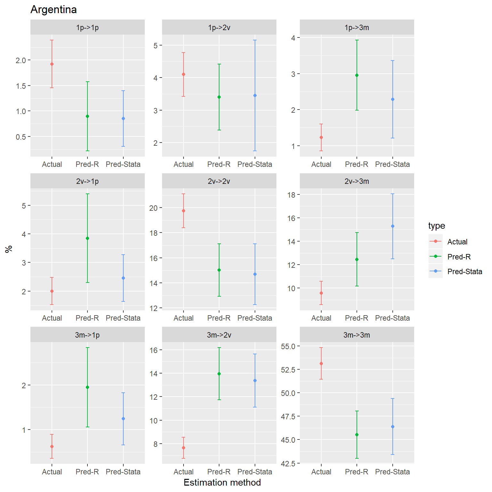
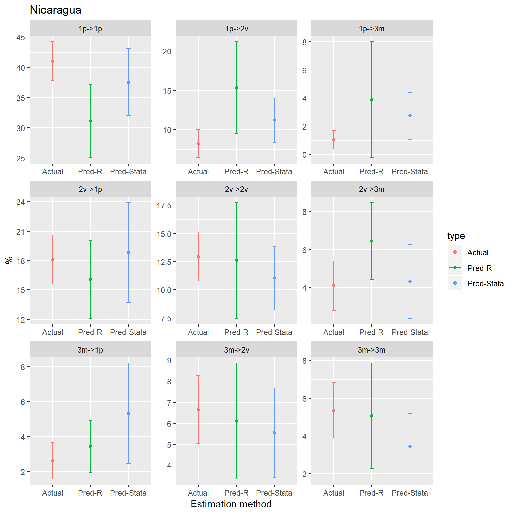
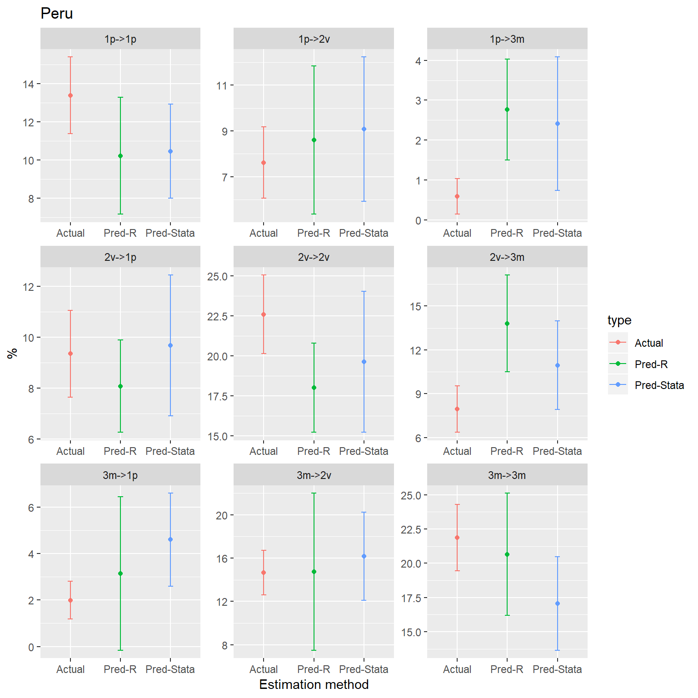

r_vs_stata_lassopmm.Rmdlassopmm() in RLet us follow the example of Argentina. We start with initializing all necessary libraries and loading data.
library(dplyr)
library(kableExtra)
library(lassopmm)
library(mice)
library(statar)
library(tidyr)
library(purrr)
period0 <-
haven::read_dta("DATA LOCATION 0.dta") %>%
haven::zap_labels() %>%
mutate(pondera = pondera * miembros)
period1 <-
haven::read_dta("DATA LOCATION 1.dta") %>%
haven::zap_labels() %>%
mutate(pondera = pondera * miembros)We have the following set of the parameters used in Stata code for the analysis:
lipcf
We run analysis with the same inputs in R:
dependent_var <- "lipcf"
independent_vars <-
c("hombre", "aedu", "miembros", "miembros2",
"region1", "region2", "region3", "region4", "region5", "region6",
"hombre_region1", "hombre_region2", "hombre_region3",
"hombre_region4", "hombre_region5", "hombre_region6",
"aedu_region1", "aedu_region2", "aedu_region3",
"aedu_region4", "aedu_region5", "aedu_region6",
"miembros_region1", "miembros_region2", "miembros_region3",
"miembros_region4", "miembros_region5", "miembros_region6",
"miembros2_region1", "miembros2_region2", "miembros2_region3",
"miembros2_region4", "miembros2_region5", "miembros2_region6",
"edad", "edad2",
"edad_region1", "edad_region2", "edad_region3",
"edad_region4", "edad_region5", "edad_region6",
"edad2_region1", "edad2_region2", "edad2_region3",
"edad2_region4", "edad2_region5", "edad2_region6"
)
weight_var <- "pondera"
n_iterations <- 50
n_nearest <- 10Running the analysis is made in one command:
For this comparison, we use variables g_a and g_p with grouping by perc and mobility. Following Stata code, we implement same calculations of perc, g_a and g_p on the r_mi_data in R. Following Stata code, we also create variables mobility_actual and mobility_pred.
Note that running lassopmm() has created one new variable lipcf_source for all imputations. In general, the name of the new variable originates from our dependent variable adding to in in the end ’_source’.
r_mi_data <-
r_mi_data_raw %>%
mutate(
ipcf_pred = exp(lipcf_source),
perc = statar::xtile(ipcf, wt = pondera, n = 5),
g_a = (ipcf_2014/ipcf) ^ (1 / abs(2013 - 2014)) - 1,
g_p = (ipcf_pred/ipcf) ^ (1 / abs(2013 - 2014)) - 1,
poor_pred = if_else(lipcf_source < lpl, 1, 0, NA_real_)) %>%
left_join(
tibble(
poor = c(1, 0, 1, 0),
poor_2014 = c(1, 1, 0, 0),
mobility_actual = c(1, 2, 3, 4)
),
by = c("poor", "poor_2014")
)%>%
left_join(
tibble(
poor = c(1, 0, 1, 0),
poor_pred = c(1, 1, 0, 0),
mobility_pred = c(1, 2, 3, 4)
),
by = c("poor", "poor_pred")
)Let us first find simple weighted means of g_a and g_p on the multiple imputation data and compare it with the same in Stata.
bind_rows(
r_mi_data %>% get_mi_mean("g_a", "pondera"),
r_mi_data %>% get_mi_mean("g_p", "pondera")
) %>%
format_kable()| variable | estimate | std.error | statistic | df | p.value | 2.5 % | 97.5 % | riv | lambda | fmi | ubar | b | t | dfcom |
|---|---|---|---|---|---|---|---|---|---|---|---|---|---|---|
| g_a | 0.07009553 | 0.01145724 | 6.118012 | 3322.66725 | 1.10e-09 | 0.04763157 | 0.09255948 | 0.000000 | 0.0000000 | 0.0006013831 | 0.0001312683 | 0.000000000 | 0.0001312683 | 3325 |
| g_p | 0.23092673 | 0.03705349 | 6.232253 | 78.69773 | 2.13e-08 | 0.15716919 | 0.30468426 | 3.010645 | 0.7506635 | 0.7567673999 | 0.0003423293 | 0.001010424 | 0.0013729613 | 3325 |
Same as Stata below:
mi estimate: mean g_a g_p [aw = pondera]
Multiple-imputation estimates Imputations = 50
Mean estimation Number of obs = 3,326
Average RVI = 1.4442
Largest FMI = 0.7227
Complete DF = 3325
DF adjustment: Small sample DF: min = 86.65
avg = 1,704.83
Within VCE type: Analytic max = 3,323.00
--------------------------------------------------------------
| Mean Std. Err. [95% Conf. Interval]
-------------+------------------------------------------------
g_a | .0700955 .0114572 .0476316 .0925595
g_p | .2378207 .0353957 .167464 .3081775
--------------------------------------------------------------Lets do the same as in the previous section but this time using the group-wise weighted means. We do grouping by perc variable, which is derived from the actual values of ipcf. Therefore, each imputation has the same values of the perc variable and every group created based on the perc variable is the same across all imputations.
To demonstrate it, we do the following:
| perc | 0 | 1 | 2 | 3 | 4 | 5 | 6 | 7 | 8 | 9 | 10 | 11 | 12 | 13 | 14 | 15 | 16 | 17 | 18 | 19 | 20 | 21 | 22 | 23 | 24 | 25 | 26 | 27 | 28 | 29 | 30 | 31 | 32 | 33 | 34 | 35 | 36 | 37 | 38 | 39 | 40 | 41 | 42 | 43 | 44 | 45 | 46 | 47 | 48 | 49 | 50 |
|---|---|---|---|---|---|---|---|---|---|---|---|---|---|---|---|---|---|---|---|---|---|---|---|---|---|---|---|---|---|---|---|---|---|---|---|---|---|---|---|---|---|---|---|---|---|---|---|---|---|---|---|
| 1 | 521 | 521 | 521 | 521 | 521 | 521 | 521 | 521 | 521 | 521 | 521 | 521 | 521 | 521 | 521 | 521 | 521 | 521 | 521 | 521 | 521 | 521 | 521 | 521 | 521 | 521 | 521 | 521 | 521 | 521 | 521 | 521 | 521 | 521 | 521 | 521 | 521 | 521 | 521 | 521 | 521 | 521 | 521 | 521 | 521 | 521 | 521 | 521 | 521 | 521 | 521 |
| 2 | 530 | 530 | 530 | 530 | 530 | 530 | 530 | 530 | 530 | 530 | 530 | 530 | 530 | 530 | 530 | 530 | 530 | 530 | 530 | 530 | 530 | 530 | 530 | 530 | 530 | 530 | 530 | 530 | 530 | 530 | 530 | 530 | 530 | 530 | 530 | 530 | 530 | 530 | 530 | 530 | 530 | 530 | 530 | 530 | 530 | 530 | 530 | 530 | 530 | 530 | 530 |
| 3 | 657 | 657 | 657 | 657 | 657 | 657 | 657 | 657 | 657 | 657 | 657 | 657 | 657 | 657 | 657 | 657 | 657 | 657 | 657 | 657 | 657 | 657 | 657 | 657 | 657 | 657 | 657 | 657 | 657 | 657 | 657 | 657 | 657 | 657 | 657 | 657 | 657 | 657 | 657 | 657 | 657 | 657 | 657 | 657 | 657 | 657 | 657 | 657 | 657 | 657 | 657 |
| 4 | 688 | 688 | 688 | 688 | 688 | 688 | 688 | 688 | 688 | 688 | 688 | 688 | 688 | 688 | 688 | 688 | 688 | 688 | 688 | 688 | 688 | 688 | 688 | 688 | 688 | 688 | 688 | 688 | 688 | 688 | 688 | 688 | 688 | 688 | 688 | 688 | 688 | 688 | 688 | 688 | 688 | 688 | 688 | 688 | 688 | 688 | 688 | 688 | 688 | 688 | 688 |
| 5 | 930 | 930 | 930 | 930 | 930 | 930 | 930 | 930 | 930 | 930 | 930 | 930 | 930 | 930 | 930 | 930 | 930 | 930 | 930 | 930 | 930 | 930 | 930 | 930 | 930 | 930 | 930 | 930 | 930 | 930 | 930 | 930 | 930 | 930 | 930 | 930 | 930 | 930 | 930 | 930 | 930 | 930 | 930 | 930 | 930 | 930 | 930 | 930 | 930 | 930 | 930 |
The group by means are calculated in the following way:
bind_rows(
get_mi_mean_by_group(r_mi_data, "g_a", "perc", "pondera"),
get_mi_mean_by_group(r_mi_data, "g_p", "perc", "pondera")
) %>%
format_kable()| perc | variable | estimate | std.error | statistic | df | p.value | 2.5 % | 97.5 % | riv | lambda | fmi | ubar | b | t | dfcom |
|---|---|---|---|---|---|---|---|---|---|---|---|---|---|---|---|
| 1 | g_a | 0.43150414 | 0.04475951 | 9.640502 | 517.95962 | 0.0000000000 | 0.343571635 | 0.5194366384 | 0.000000 | 0.0000000 | 0.003839069 | 0.0020034139 | 0.0000000000 | 0.0020034139 | 520 |
| 2 | g_a | 0.04467507 | 0.02541860 | 1.757574 | 526.95852 | 0.0794006519 | -0.005259163 | 0.0946093095 | 0.000000 | 0.0000000 | 0.003773880 | 0.0006461054 | 0.0000000000 | 0.0006461054 | 529 |
| 3 | g_a | 0.04749590 | 0.02155452 | 2.203524 | 653.94362 | 0.0279056846 | 0.005171481 | 0.0898203191 | 0.000000 | 0.0000000 | 0.003044401 | 0.0004645974 | 0.0000000000 | 0.0004645974 | 656 |
| 4 | g_a | -0.03027516 | 0.01584276 | -1.910977 | 684.94010 | 0.0564246889 | -0.061381368 | 0.0008310551 | 0.000000 | 0.0000000 | 0.002907230 | 0.0002509931 | 0.0000000000 | 0.0002509931 | 687 |
| 5 | g_a | -0.14337471 | 0.01198281 | -11.965028 | 926.91356 | 0.0000000000 | -0.166891298 | -0.1198581153 | 0.000000 | 0.0000000 | 0.002150737 | 0.0001435878 | 0.0000000000 | 0.0001435878 | 929 |
| 1 | g_p | 1.08946396 | 0.12609972 | 8.639702 | 61.77509 | 0.0000000000 | 0.837375958 | 1.3415519615 | 2.278848 | 0.6950148 | 0.704431564 | 0.0048496117 | 0.0108348306 | 0.0159011389 | 520 |
| 2 | g_p | 0.32798295 | 0.06865970 | 4.776935 | 72.90575 | 0.0000089639 | 0.191141380 | 0.4648245178 | 1.794166 | 0.6421114 | 0.651541253 | 0.0016871420 | 0.0029676594 | 0.0047141547 | 529 |
| 3 | g_p | 0.12319329 | 0.04693274 | 2.624890 | 90.35377 | 0.0101775023 | 0.029958178 | 0.2164284044 | 1.481359 | 0.5969951 | 0.605629000 | 0.0008876919 | 0.0012892064 | 0.0022026824 | 656 |
| 4 | g_p | -0.09102827 | 0.04030760 | -2.258340 | 72.83999 | 0.0269198899 | -0.171364167 | -0.0106923707 | 2.062871 | 0.6735089 | 0.682118935 | 0.0005304508 | 0.0010727957 | 0.0016247024 | 687 |
| 5 | g_p | -0.29632988 | 0.02865188 | -10.342423 | 59.82293 | 0.0000000000 | -0.353645660 | -0.2390140901 | 3.320853 | 0.7685642 | 0.775932070 | 0.0001899927 | 0.0006185663 | 0.0008209303 | 929 |
R produces very close results to Stata.
. mi estimate: mean g_a g_p [aw = pondera],over(perc)
Multiple-imputation estimates Imputations = 50
Mean estimation Number of obs = 3,326
Average RVI = 1.2358
Largest FMI = 0.7367
Complete DF = 3325
DF adjustment: Small sample DF: min = 83.27
avg = 1,707.62
Within VCE type: Analytic max = 3,323.00
--------------------------------------------------------------
Over | Mean Std. Err. [95% Conf. Interval]
-------------+------------------------------------------------
g_a |
1 | .4315041 .0447595 .3437451 .5192631
2 | .0446751 .0254186 -.0051626 .0945128
3 | .0474959 .0215545 .0052344 .0897574
4 | -.0302752 .0158428 -.0613377 .0007874
5 | -.1433747 .0119828 -.1668691 -.1198803
-------------+------------------------------------------------
g_p |
1 | 1.123281 .1322436 .8605087 1.386054
2 | .3228994 .0677601 .1886621 .4571366
3 | .1243648 .0557208 .0136161 .2351135
4 | -.0863139 .0429758 -.1717136 -.0009142
5 | -.2964972 .0267038 -.3496075 -.243387
--------------------------------------------------------------Another example of weighted means by groups equal for many imputations is the following:
| mobility_actual | variable | estimate | std.error | statistic | df | p.value | 2.5 % | 97.5 % | riv | lambda | fmi | ubar | b | t | dfcom |
|---|---|---|---|---|---|---|---|---|---|---|---|---|---|---|---|
| 1 | g_a | -0.06833180 | 0.03836201 | -1.781236 | 48.10840 | 0.08118767 | -0.14545930 | 0.008795709 | 0 | 0 | 0.0391325138 | 0.0014716440 | 0 | 0.0014716440 | 50 |
| 2 | g_a | -0.54777782 | 0.01758967 | -31.142012 | 121.03551 | 0.00000000 | -0.58260112 | -0.512954527 | 0 | 0 | 0.0161244145 | 0.0003093966 | 0 | 0.0003093966 | 123 |
| 3 | g_a | 1.16372140 | 0.12839738 | 9.063436 | 84.05901 | 0.00000000 | 0.90839176 | 1.419051042 | 0 | 0 | 0.0229729244 | 0.0164858860 | 0 | 0.0164858860 | 86 |
| 4 | g_a | 0.07766824 | 0.01115662 | 6.961626 | 3060.69394 | 0.00000000 | 0.05579301 | 0.099543471 | 0 | 0 | 0.0006528067 | 0.0001244702 | 0 | 0.0001244702 | 3063 |
Same analysis in Stata is similar to R.
. mi estimate: mean g_a [aw = pondera],over(mobility_actual)
Multiple-imputation estimates Imputations = 50
Mean estimation Number of obs = 3,326
Average RVI = 0.0000
Largest FMI = 0.0000
Complete DF = 3325
DF adjustment: Small sample DF: min = 3,323.00
avg = 3,323.00
Within VCE type: Analytic max = 3,323.00
--------------------------------------------------------------
Over | Mean Std. Err. [95% Conf. Interval]
-------------+------------------------------------------------
1 | -.0683318 .038362 -.1435474 .0068838
2 | -.5477778 .0175897 -.5822655 -.5132901
3 | 1.163721 .1283974 .9119755 1.415467
4 | .0776682 .0111566 .0557937 .0995428
--------------------------------------------------------------In this example, we create groups based on the predicted data. Predicted data vary from one imputation to another, therefore, groups created based on this data also have unequal size. This complicates analysis of variance because for calculating within and between variance on the multiple imputation data, all groups have to be of equal size.
In our analysis, when we create groups based on the mobility_pred variable, for every single imputation, each group has different number of observation. In addition, data for imputation 0 (data without imputations) is not available for each group of mobility_pred.
| mobility_pred | 0 | 1 | 2 | 3 | 4 | 5 | 6 | 7 | 8 | 9 | 10 | 11 | 12 | 13 | 14 | 15 | 16 | 17 | 18 | 19 | 20 | 21 | 22 | 23 | 24 | 25 | 26 | 27 | 28 | 29 | 30 | 31 | 32 | 33 | 34 | 35 | 36 | 37 | 38 | 39 | 40 | 41 | 42 | 43 | 44 | 45 | 46 | 47 | 48 | 49 | 50 |
|---|---|---|---|---|---|---|---|---|---|---|---|---|---|---|---|---|---|---|---|---|---|---|---|---|---|---|---|---|---|---|---|---|---|---|---|---|---|---|---|---|---|---|---|---|---|---|---|---|---|---|---|
| 1 | NA | 28 | 22 | 24 | 20 | 27 | 30 | 16 | 20 | 19 | 24 | 20 | 20 | 23 | 18 | 19 | 18 | 25 | 27 | 19 | 22 | 18 | 25 | 22 | 25 | 21 | 22 | 20 | 26 | 20 | 25 | 22 | 17 | 14 | 19 | 19 | 17 | 25 | 20 | 26 | 23 | 22 | 17 | 20 | 24 | 24 | 21 | 18 | 26 | 21 | 27 |
| 2 | NA | 144 | 137 | 135 | 128 | 146 | 129 | 117 | 141 | 131 | 154 | 133 | 139 | 153 | 139 | 128 | 148 | 149 | 146 | 150 | 138 | 155 | 141 | 117 | 156 | 163 | 128 | 139 | 146 | 147 | 129 | 159 | 150 | 154 | 115 | 167 | 130 | 150 | 138 | 134 | 134 | 137 | 154 | 143 | 160 | 146 | 132 | 130 | 152 | 135 | 176 |
| 3 | NA | 110 | 116 | 114 | 118 | 111 | 108 | 122 | 118 | 119 | 114 | 118 | 118 | 115 | 120 | 119 | 120 | 113 | 111 | 119 | 116 | 120 | 113 | 116 | 113 | 117 | 116 | 118 | 112 | 118 | 113 | 116 | 121 | 124 | 119 | 119 | 121 | 113 | 118 | 112 | 115 | 116 | 121 | 118 | 114 | 114 | 117 | 120 | 112 | 117 | 111 |
| 4 | NA | 3044 | 3051 | 3053 | 3060 | 3042 | 3059 | 3071 | 3047 | 3057 | 3034 | 3055 | 3049 | 3035 | 3049 | 3060 | 3040 | 3039 | 3042 | 3038 | 3050 | 3033 | 3047 | 3071 | 3032 | 3025 | 3060 | 3049 | 3042 | 3041 | 3059 | 3029 | 3038 | 3034 | 3073 | 3021 | 3058 | 3038 | 3050 | 3054 | 3054 | 3051 | 3034 | 3045 | 3028 | 3042 | 3056 | 3058 | 3036 | 3053 | 3012 |
| NA | 3326 | NA | NA | NA | NA | NA | NA | NA | NA | NA | NA | NA | NA | NA | NA | NA | NA | NA | NA | NA | NA | NA | NA | NA | NA | NA | NA | NA | NA | NA | NA | NA | NA | NA | NA | NA | NA | NA | NA | NA | NA | NA | NA | NA | NA | NA | NA | NA | NA | NA | NA |
This is, unfortunately, a limitation of the R mice package as well as several other R packages for multiple imputations analysis.
Stata by default resolves this problem adding a note in the end of statistics "Note: Numbers of observations in e(_N) vary among imputations.". However, there is no documentation about this note and problem and the source code is not available. So the way how Stata resolves this problem remains a black box to me at the moment of writing.
To resolve this problem in R, I do some data shuffling. This shuffling only comes to an action with the respective warning messages when we do group-wise calculations, where data is split into groups and calculations are preformed on each group separately.
Problem 1. Absence of the non-imputed data (data for imputation == 0) in each group. it is clear that because we use predicted variables for creating groups, we are missing imputation = 0 data in each group. This is a problem for calculating statistics and in order for it to work, we need to bring the non imputed values back into each group. We do this by simply finding all unique ID for which values were imputed in the groups and add imputation=0 observations with this IDs to each specific group.
Problem 2. Unequal groups size. When we have for all iteration in each group necessary for calculating means, we still have unequal group size across iterations. To resolve this problem we randomly sub sample (without repetitions) data for same groups in all imputations to the size of the smallest group. For example, we have 50 imputations for a group with predicted mobility equal to 1. Size of this group 1 in each imputation vary from 18 to 25 observations. In order to make this group of equal size for all imputations, we sub sample each group to the size of 18 observations and run statistics. This is done with the argument use_random = TRUE in the function get_mi_mean_by_group(). Specifying the same argument as FALSE implement slightly different methodology, where instead of random sampling simply first n observations in each group are selected, where n equal to the size of the smallest group across imputations.
bind_rows(
get_mi_mean_by_group(r_mi_data, "g_p", "mobility_pred", "pondera", use_random = TRUE),
get_mi_mean_by_group(r_mi_data, "g_p", "mobility_pred", "pondera", use_random = FALSE)
) %>%
format_kable()| mobility_pred | variable | estimate | std.error | statistic | df | p.value | 2.5 % | 97.5 % | riv | lambda | fmi | ubar | b | t | dfcom |
|---|---|---|---|---|---|---|---|---|---|---|---|---|---|---|---|
| 1 | g_p | 0.01052873 | 0.09844004 | 0.1069558 | 2.767542 | 0.9220992781 | -0.3181768 | 0.3392343 | 2.980003 | 0.7487439 | 0.8358715 | 0.0024347828 | 0.0071133916 | 0.0096904423 | 13 |
| 2 | g_p | -0.61162320 | 0.03575150 | -17.1076231 | 21.906384 | 0.0000000000 | -0.6857857 | -0.5374608 | 2.859688 | 0.7409117 | 0.7617167 | 0.0003311588 | 0.0009284421 | 0.0012781698 | 114 |
| 3 | g_p | 2.16621989 | 0.33379248 | 6.4897205 | 29.762080 | 0.0000003714 | 1.4842961 | 2.8481437 | 1.685326 | 0.6276057 | 0.6503390 | 0.0414912113 | 0.0685551056 | 0.1114174191 | 107 |
| 4 | g_p | 0.21787942 | 0.03183337 | 6.8443717 | 94.778535 | 0.0000000008 | 0.1546803 | 0.2810786 | 2.148949 | 0.6824337 | 0.6889293 | 0.0003218101 | 0.0006779935 | 0.0010133635 | 3011 |
| 1 | g_p | -0.01363607 | 0.07084444 | -0.1924791 | 5.469656 | 0.8543120238 | -0.1911432 | 0.1638711 | 1.020440 | 0.5050582 | 0.6219323 | 0.0024840809 | 0.0024851512 | 0.0050189351 | 13 |
| 2 | g_p | -0.60898618 | 0.02932744 | -20.7650642 | 32.883242 | 0.0000000000 | -0.6686614 | -0.5493110 | 1.558870 | 0.6092024 | 0.6309841 | 0.0003361245 | 0.0005137003 | 0.0008600988 | 114 |
| 3 | g_p | 2.08600473 | 0.28161842 | 7.4072026 | 41.024043 | 0.0000000044 | 1.5172749 | 2.6547346 | 1.016176 | 0.5040116 | 0.5265443 | 0.0393363092 | 0.0391888504 | 0.0793089365 | 107 |
| 4 | g_p | 0.24009813 | 0.03554071 | 6.7555808 | 82.038053 | 0.0000000019 | 0.1693968 | 0.3107994 | 2.737088 | 0.7324120 | 0.7387053 | 0.0003380017 | 0.0009070003 | 0.0012631420 | 3011 |
Comparing both approaches to the Stata results gives almost identical estimations.
. mi estimate: mean g_p [aw = pondera],over(mobility_pred)
Multiple-imputation estimates Imputations = 50
Mean estimation Number of obs = 3,326
Average RVI = 2.2503
Largest FMI = 0.7617
Complete DF = 3325
DF adjustment: Small sample DF: min = 77.58
avg = 97.73
Within VCE type: Analytic max = 122.20
1: mobility_pred = 1
2: mobility_pred = 2
3: mobility_pred = 3
4: mobility_pred = 4
--------------------------------------------------------------
Over | Mean Std. Err. [95% Conf. Interval]
-------------+------------------------------------------------
1 | -.0133056 .0718002 -.1556967 .1290856
2 | -.5893088 .0311675 -.6513639 -.5272538
3 | 1.895496 .2997447 1.302131 2.488861
4 | .2248258 .0335358 .1581773 .2914743
--------------------------------------------------------------
Note: Numbers of observations in e(_N) vary among imputations.Using both adjustments does brings some bias to the results. Using option use_random = TRUE make means for the groups with the small number of observations vary from one iteration to another. Using use_random = FALSE produces consistent results but may bias the estimates. In any case, when we do inference on the group-wise statistics derived from the multiple imputations data set, we need to take all possible information into account especially, number of degrees of freedoms, confidence intervals and standard errors.
Below, we produce a table, where same statistics was calculated 10 times and estimation parameters were compared between two approaches. For the small sample, besides varying estimates we also find wide confidence intervals making out estimates insignificant
| mobility_pred | variable | estimate_random | std.error_random | 2.5 %_random | 97.5 %_random | dfcom_random | mobility_pred1 | variable1 | estimate_fixed | std.error_fixed | 2.5 %_fixed | 97.5 %_fixed | dfcom_fixed |
|---|---|---|---|---|---|---|---|---|---|---|---|---|---|
| 1 | g_p | -0.004088163 | 0.09474025 | -0.3231397 | 0.3149633 | 13 | 1 | g_p | -0.01363607 | 0.07084444 | -0.1911432 | 0.1638711 | 13 |
| 1 | g_p | 0.003283912 | 0.09113073 | -0.2806524 | 0.2872202 | 13 | 1 | g_p | -0.01363607 | 0.07084444 | -0.1911432 | 0.1638711 | 13 |
| 1 | g_p | -0.001594849 | 0.07849433 | -0.2038373 | 0.2006476 | 13 | 1 | g_p | -0.01363607 | 0.07084444 | -0.1911432 | 0.1638711 | 13 |
| 1 | g_p | -0.001358323 | 0.07687158 | -0.1959842 | 0.1932676 | 13 | 1 | g_p | -0.01363607 | 0.07084444 | -0.1911432 | 0.1638711 | 13 |
| 1 | g_p | -0.009629350 | 0.07653828 | -0.2017371 | 0.1824784 | 13 | 1 | g_p | -0.01363607 | 0.07084444 | -0.1911432 | 0.1638711 | 13 |
| 1 | g_p | -0.015339739 | 0.07965561 | -0.2280346 | 0.1973551 | 13 | 1 | g_p | -0.01363607 | 0.07084444 | -0.1911432 | 0.1638711 | 13 |
| 1 | g_p | -0.001307259 | 0.09029250 | -0.2626218 | 0.2600073 | 13 | 1 | g_p | -0.01363607 | 0.07084444 | -0.1911432 | 0.1638711 | 13 |
| 1 | g_p | -0.006892557 | 0.08878073 | -0.2583053 | 0.2445202 | 13 | 1 | g_p | -0.01363607 | 0.07084444 | -0.1911432 | 0.1638711 | 13 |
| 1 | g_p | 0.009060416 | 0.10445151 | -0.3391556 | 0.3572764 | 13 | 1 | g_p | -0.01363607 | 0.07084444 | -0.1911432 | 0.1638711 | 13 |
| 1 | g_p | -0.005009443 | 0.07421847 | -0.1901740 | 0.1801551 | 13 | 1 | g_p | -0.01363607 | 0.07084444 | -0.1911432 | 0.1638711 | 13 |
Same calculations for a group of slightly bigger size demonstrate significantly lower variability of estimates.
| mobility_pred | variable | estimate_random | std.error_random | 2.5 %_random | 97.5 %_random | dfcom_random | mobility_pred1 | variable1 | estimate_fixed | std.error_fixed | 2.5 %_fixed | 97.5 %_fixed | dfcom_fixed |
|---|---|---|---|---|---|---|---|---|---|---|---|---|---|
| 3 | g_p | 2.179993 | 0.3391241 | 1.488627 | 2.871359 | 107 | 3 | g_p | 2.086005 | 0.2816184 | 1.517275 | 2.654735 | 107 |
| 3 | g_p | 2.116823 | 0.3305936 | 1.441656 | 2.791989 | 107 | 3 | g_p | 2.086005 | 0.2816184 | 1.517275 | 2.654735 | 107 |
| 3 | g_p | 2.168741 | 0.3091700 | 1.541391 | 2.796091 | 107 | 3 | g_p | 2.086005 | 0.2816184 | 1.517275 | 2.654735 | 107 |
| 3 | g_p | 2.146237 | 0.3365129 | 1.459405 | 2.833070 | 107 | 3 | g_p | 2.086005 | 0.2816184 | 1.517275 | 2.654735 | 107 |
| 3 | g_p | 2.121777 | 0.3174650 | 1.475293 | 2.768262 | 107 | 3 | g_p | 2.086005 | 0.2816184 | 1.517275 | 2.654735 | 107 |
| 3 | g_p | 2.211042 | 0.3202897 | 1.561215 | 2.860869 | 107 | 3 | g_p | 2.086005 | 0.2816184 | 1.517275 | 2.654735 | 107 |
| 3 | g_p | 2.166660 | 0.3072799 | 1.545215 | 2.788105 | 107 | 3 | g_p | 2.086005 | 0.2816184 | 1.517275 | 2.654735 | 107 |
| 3 | g_p | 2.171216 | 0.3812609 | 1.385363 | 2.957069 | 107 | 3 | g_p | 2.086005 | 0.2816184 | 1.517275 | 2.654735 | 107 |
| 3 | g_p | 2.206361 | 0.3116268 | 1.575821 | 2.836901 | 107 | 3 | g_p | 2.086005 | 0.2816184 | 1.517275 | 2.654735 | 107 |
| 3 | g_p | 2.123490 | 0.3155231 | 1.483321 | 2.763658 | 107 | 3 | g_p | 2.086005 | 0.2816184 | 1.517275 | 2.654735 | 107 |
To help us with reproducing mobility we created several help functions. Below, we calculated state of poverty for 2 poverty lines and different incomes:
ipcf - the actually observed income from panel data and variable poor_act, vul_act and mid_act represent respective poverty categories.ipcf_pred - income predicted using the lassopmm
ipcf_2014 - income in 2014 data (period 0 for our calculations).pl_1 <- 5.5 * 30.41667
pl_2 <- 13 * 30.41667
poverty_calc <-
r_mi_data %>%
mutate(ipcf = if_else(.imp == 0, NA_real_, ipcf),
ipcf_2014 = if_else(.imp == 0, NA_real_, ipcf_2014)) %>%
detect_poverty(ipcf, "act", pl_1, pl_2) %>%
detect_poverty(ipcf_pred, "pred", pl_1, pl_2) %>%
detect_poverty(ipcf_2014, "2014", pl_1, pl_2) %>%
select(.id, .imp, pondera, contains("ipcf"),
contains("_act"), -contains("_actual"),
contains("_pred"), contains("_2014"))At the next step we find all combinations for the variables poor_, vul_ and mid_ between different periods and create corresponding dummy variables.
poverty_calc2 <-
poverty_calc %>%
left_join(
(.) %>%
select(matches("\\d.{1,}_2014$"), matches("\\d.{1,}_act$")) %>%
get_all_combinations(mAct)
) %>%
left_join(
(.) %>%
select(matches("\\d.{1,}_2014$"), matches("\\d.{1,}_pred$")) %>%
get_all_combinations(mPred)
)Finally, we reproduce STATA analysis of the mobility.
compare_vars <-
poverty_calc2 %>%
names(.) %>%
magrittr::extract(stringr::str_detect(., "mAct_")) %>%
sort()
arg_act_mob <-
poverty_calc2 %>%
get_mi_means_table(compare_vars, "pondera") %>%
select(-ubar, -t) %>%
arrange(variable)
arg_act_mob %>%
format_kable()| variable | estimate | std.error | statistic | df | p.value | 2.5 % | 97.5 % | riv | lambda | fmi | b | dfcom |
|---|---|---|---|---|---|---|---|---|---|---|---|---|
| mAct_1poor_1poor | 0.019222421 | 0.002381187 | 8.072622 | 3322.667 | 0.0000e+00 | 0.014553680 | 0.023891162 | 0 | 0 | 0.0006013831 | 0 | 3325 |
| mAct_1poor_2vul | 0.040982561 | 0.003438088 | 11.920161 | 3322.667 | 0.0000e+00 | 0.034241577 | 0.047723545 | 0 | 0 | 0.0006013831 | 0 | 3325 |
| mAct_1poor_3mid | 0.012259249 | 0.001908348 | 6.424011 | 3322.667 | 2.0000e-10 | 0.008517593 | 0.016000906 | 0 | 0 | 0.0006013831 | 0 | 3325 |
| mAct_2vul_1poor | 0.019992089 | 0.002427437 | 8.235882 | 3322.667 | 0.0000e+00 | 0.015232665 | 0.024751512 | 0 | 0 | 0.0006013831 | 0 | 3325 |
| mAct_2vul_2vul | 0.197464667 | 0.006903685 | 28.602793 | 3322.667 | 0.0000e+00 | 0.183928763 | 0.211000571 | 0 | 0 | 0.0006013831 | 0 | 3325 |
| mAct_2vul_3mid | 0.095835846 | 0.005104954 | 18.773108 | 3322.667 | 0.0000e+00 | 0.085826674 | 0.105845017 | 0 | 0 | 0.0006013831 | 0 | 3325 |
| mAct_3mid_1poor | 0.006280695 | 0.001370061 | 4.584245 | 3322.667 | 4.7242e-06 | 0.003594446 | 0.008966943 | 0 | 0 | 0.0006013831 | 0 | 3325 |
| mAct_3mid_2vul | 0.076522379 | 0.004610113 | 16.598807 | 3322.667 | 0.0000e+00 | 0.067483431 | 0.085561328 | 0 | 0 | 0.0006013831 | 0 | 3325 |
| mAct_3mid_3mid | 0.531440094 | 0.008653940 | 61.410187 | 3322.667 | 0.0000e+00 | 0.514472502 | 0.548407686 | 0 | 0 | 0.0006013831 | 0 | 3325 |
R estimations are very close to Stata results.
--------------------------------------------------------------
| Mean Std. Err. [95% Conf. Interval]
-------------+------------------------------------------------
pp_actual | .0192224 .0023812 .0145537 .0238912
pv_actual | .0409826 .0034381 .0342416 .0477235
pm_actual | .0122592 .0019083 .0085176 .0160009
vp_actual | .0199921 .0024274 .0152327 .0247515
vv_actual | .1974647 .0069037 .1839288 .2110006
vm_actual | .0958358 .005105 .0858267 .105845
mp_actual | .0062807 .0013701 .0035944 .0089669
mv_actual | .0765224 .0046101 .0674834 .0855613
mm_actual | .5314401 .0086539 .5144725 .5484077
--------------------------------------------------------------Do the same for predicted poverty.
compare_vars2 <-
poverty_calc2 %>%
names(.) %>%
magrittr::extract(stringr::str_detect(., "mPred_")) %>%
sort()
arg_pred_mob <-
poverty_calc2 %>%
get_mi_means_table(compare_vars2, "pondera") %>%
select(-ubar, -t) %>%
arrange(variable)
arg_pred_mob %>%
format_kable()| variable | estimate | std.error | statistic | df | p.value | 2.5 % | 97.5 % | riv | lambda | fmi | b | dfcom |
|---|---|---|---|---|---|---|---|---|---|---|---|---|
| mPred_1poor_1poor | 0.008944512 | 0.003419736 | 2.615556 | 74.11655 | 0.0107879729 | 0.002130717 | 0.01575831 | 3.390840 | 0.7722531 | 0.7781597 | 8.85410e-06 | 3325 |
| mPred_1poor_2vul | 0.033976969 | 0.005121368 | 6.634354 | 114.39393 | 0.0000000011 | 0.023831953 | 0.04412198 | 1.658273 | 0.6238159 | 0.6302248 | 1.60409e-05 | 3325 |
| mPred_1poor_3mid | 0.029542750 | 0.004895470 | 6.034711 | 108.62007 | 0.0000000225 | 0.019839706 | 0.03924579 | 1.780844 | 0.6403969 | 0.6468402 | 1.50466e-05 | 3325 |
| mPred_2vul_1poor | 0.038458656 | 0.007773146 | 4.947631 | 65.65336 | 0.0000055100 | 0.022937540 | 0.05397977 | 4.439763 | 0.8161685 | 0.8215238 | 4.83474e-05 | 3325 |
| mPred_2vul_2vul | 0.150265734 | 0.010570576 | 14.215473 | 103.38989 | 0.0000000000 | 0.129302430 | 0.17122904 | 1.911291 | 0.6565098 | 0.6629670 | 7.19181e-05 | 3325 |
| mPred_2vul_3mid | 0.124568210 | 0.011497753 | 10.834135 | 78.37719 | 0.0000000000 | 0.101679678 | 0.14745674 | 3.034304 | 0.7521258 | 0.7582178 | 9.74802e-05 | 3325 |
| mPred_3mid_1poor | 0.019451027 | 0.004462971 | 4.358314 | 87.73567 | 0.0000354951 | 0.010581437 | 0.02832062 | 2.474869 | 0.7122194 | 0.7185626 | 1.39079e-05 | 3325 |
| mPred_3mid_2vul | 0.139534624 | 0.011188612 | 12.471129 | 87.85262 | 0.0000000000 | 0.117299089 | 0.16177016 | 2.469273 | 0.7117552 | 0.7181005 | 8.73540e-05 | 3325 |
| mPred_3mid_3mid | 0.455257517 | 0.012820782 | 35.509342 | 148.01084 | 0.0000000000 | 0.429922098 | 0.48059294 | 1.204568 | 0.5463963 | 0.5524039 | 8.80515e-05 | 3325 |
R estimations are very close to Stata results.
--------------------------------------------------------------
| Mean Std. Err. [95% Conf. Interval]
-------------+------------------------------------------------
pp_pred | .0085054 .0027571 .0030355 .0139753
pv_pred | .0344468 .0085182 .0173932 .0515004
pm_pred | .022895 .0053952 .0121467 .0336432
vp_pred | .0245613 .0041501 .0163515 .0327712
vv_pred | .1468161 .0122115 .1225115 .1711207
vm_pred | .1527355 .0138703 .1250653 .1804057
mp_pred | .0124284 .0029449 .0066041 .0182527
mv_pred | .1337067 .0113548 .111124 .1562894
mm_pred | .4639047 .0151053 .4339309 .4938786
--------------------------------------------------------------
For Chile we perfom same analysis as for Argentina, but this time with less explanations.
Loading data
chile_period0 <-
haven::read_dta("DATA LOCATION 0.dta") %>%
haven::zap_labels() %>%
mutate(pondera = pondera * miembros)
chile_period1 <-
haven::read_dta("DATA LOCATION 1.dta") %>%
haven::zap_labels() %>%
mutate(pondera = pondera * miembros)Initializing analysis:
dependent_var <- "lipcf"
independent_vars <-
c("hombre", "aedu", "miembros", "miembros2", "urbano",
"region1", "region2", "region3", "region4", "region5", "region6",
"region7", "region8", "region9", "region10", "region11", "region12", "region13",
"hombre_region", "hombre_region1", "hombre_region2", "hombre_region3",
"hombre_region4", "hombre_region5", "hombre_region6", "hombre_region7",
"hombre_region8", "hombre_region9", "hombre_region10", "hombre_region11",
"hombre_region12", "hombre_region13",
"aedu_region", "aedu_region1", "aedu_region2", "aedu_region3",
"aedu_region4", "aedu_region5", "aedu_region6", "aedu_region7",
"aedu_region8", "aedu_region9", "aedu_region10", "aedu_region11",
"aedu_region12", "aedu_region13",
"miembros_region", "miembros_region1", "miembros_region2", "miembros_region3",
"miembros_region4", "miembros_region5", "miembros_region6", "miembros_region7",
"miembros_region8", "miembros_region9", "miembros_region10", "miembros_region11",
"miembros_region", "miembros_region13",
"miembros2_region", "miembros2_region1", "miembros2_region2", "miembros2_region3",
"miembros2_region4", "miembros2_region5", "miembros2_region6", "miembros2_region7",
"miembros2_region8", "miembros2_region9", "miembros2_region10", "miembros2_region11",
"miembros2_region12", "miembros2_region13",
"urbano_region", "urbano_region1", "urbano_region2", "urbano_region3",
"urbano_region4", "urbano_region5", "urbano_region6", "urbano_region7",
"urbano_region8", "urbano_region9", "urbano_region10", "urbano_region11",
"urbano_region12", "urbano_region13",
"edad", "edad2",
"edad_region", "edad_region1", "edad_region2", "edad_region3",
"edad_region4", "edad_region5", "edad_region6", "edad_region7",
"edad_region8", "edad_region9", "edad_region10", "edad_region11",
"edad_region12", "edad_region13",
"edad2_region", "edad2_region1", "edad2_region2", "edad2_region3",
"edad2_region4", "edad2_region5", "edad2_region6", "edad2_region7",
"edad2_region8", "edad2_region9", "edad2_region10", "edad2_region11",
"edad2_region12", "edad2_region13")
weight_var <- "pondera"
n_iterations <- 5
n_nearest <- 10Running the analysis is made in one command:
set.seed(238)
chile_mi_data_raw <-
lassopmm(chile_period1,
chile_period0,
dep_var = dependent_var,
indep_var = independent_vars,
weight_var = weight_var,
n_near = n_nearest,
n_boot = n_iterations)Calculating all variable:
chile_mi_data <-
chile_mi_data_raw %>%
mutate(
ipcf_pred = exp(lipcf_source),
perc = statar::xtile(ipcf, wt = pondera, n = 5),
g_a = (ipcf_2012/ipcf) ^ (1 / abs(2011 - 2012)) - 1,
g_p = (ipcf_pred/ipcf) ^ (1 / abs(2011 - 2012)) - 1,
poor_pred = if_else(lipcf_source < lpl, 1, 0, NA_real_)) %>%
left_join(
tibble(
poor = c(1, 0, 1, 0),
poor_2012 = c(1, 1, 0, 0),
mobility_actual = c(1, 2, 3, 4)
),
by = c("poor", "poor_2012")
)%>%
left_join(
tibble(
poor = c(1, 0, 1, 0),
poor_pred = c(1, 1, 0, 0),
mobility_pred = c(1, 2, 3, 4)
),
by = c("poor", "poor_pred")
)mi estimate: mean g_a g_p [aw = pondera],over(perc)
R:
bind_rows(
get_mi_mean_by_group(chile_mi_data, "g_a", "perc", "pondera"),
get_mi_mean_by_group(chile_mi_data, "g_p", "perc", "pondera")
) %>%
format_kable()| perc | variable | estimate | std.error | statistic | df | p.value | 2.5 % | 97.5 % | riv | lambda | fmi | ubar | b | t | dfcom |
|---|---|---|---|---|---|---|---|---|---|---|---|---|---|---|---|
| 1 | g_a | 0.59492042 | 0.03682505 | 16.1553210 | 691.938211 | 0.0000000000 | 0.52261819 | 0.66722265 | 0.0000000 | 0.0000000 | 0.002877954 | 0.0013560839 | 0.0000000000 | 0.0013560839 | 694 |
| 2 | g_a | 0.27152916 | 0.03233092 | 8.3984352 | 761.930171 | 0.0000000000 | 0.20806090 | 0.33499743 | 0.0000000 | 0.0000000 | 0.002614618 | 0.0010452886 | 0.0000000000 | 0.0010452886 | 764 |
| 3 | g_a | 0.14896670 | 0.02367127 | 6.2931434 | 848.920323 | 0.0000000005 | 0.10250562 | 0.19542779 | 0.0000000 | 0.0000000 | 0.002347637 | 0.0005603291 | 0.0000000000 | 0.0005603291 | 851 |
| 4 | g_a | 0.06540887 | 0.01805272 | 3.6232151 | 927.911478 | 0.0003067570 | 0.02997999 | 0.10083776 | 0.0000000 | 0.0000000 | 0.002148432 | 0.0003259005 | 0.0000000000 | 0.0003259005 | 930 |
| 5 | g_a | -0.02335965 | 0.02310450 | -1.0110432 | 909.913487 | 0.3122645468 | -0.06870395 | 0.02198466 | 0.0000000 | 0.0000000 | 0.002190788 | 0.0005338179 | 0.0000000000 | 0.0005338179 | 912 |
| 1 | g_p | 1.43414162 | 0.11057234 | 12.9701655 | 11.344171 | 0.0000000375 | 1.19167134 | 1.67661189 | 1.3925912 | 0.5820431 | 0.640318606 | 0.0051100428 | 0.0059301672 | 0.0122262435 | 694 |
| 2 | g_p | 0.82621189 | 0.07229950 | 11.4276294 | 24.490898 | 0.0000000000 | 0.67715118 | 0.97527261 | 0.6482234 | 0.3932861 | 0.437425386 | 0.0031714255 | 0.0017131602 | 0.0052272178 | 764 |
| 3 | g_p | 0.31187511 | 0.08040676 | 3.8787176 | 5.557953 | 0.0094960542 | 0.11127071 | 0.51247951 | 4.9412016 | 0.8316839 | 0.871019482 | 0.0010882052 | 0.0044808679 | 0.0064652467 | 851 |
| 4 | g_p | 0.03397496 | 0.03999681 | 0.8494418 | 11.163825 | 0.4134807638 | -0.05390007 | 0.12184998 | 1.4374815 | 0.5897405 | 0.647671090 | 0.0006563105 | 0.0007861952 | 0.0015997447 | 930 |
| 5 | g_p | -0.31927183 | 0.03204901 | -9.9619873 | 8.709288 | 0.0000047162 | -0.39214231 | -0.24640136 | 2.0108361 | 0.6678663 | 0.724596294 | 0.0003411475 | 0.0005716597 | 0.0010271391 | 912 |
Stata:
. mi estimate: mean g_a g_p [aw = pondera],over(perc)
(system variable _mi_id updated due to changed number of obs.)
Multiple-imputation estimates Imputations = 50
Mean estimation Number of obs = 4,156
Average RVI = 1.2479
Largest FMI = 0.7653
Complete DF = 4155
DF adjustment: Small sample DF: min = 78.29
avg = 2,122.12
Within VCE type: Analytic max = 4,153.00
1: perc = 1
2: perc = 2
3: perc = 3
4: perc = 4
5: perc = 5
--------------------------------------------------------------
Over | Mean Std. Err. [95% Conf. Interval]
-------------+------------------------------------------------
g_a |
1 | .5949204 .036825 .5227236 .6671172
2 | .2715292 .0323309 .2081432 .3349151
3 | .1489667 .0236713 .1025583 .1953751
4 | .0654089 .0180527 .0300159 .1008019
5 | -.0233596 .0231045 -.0686568 .0219375
-------------+------------------------------------------------
g_p |
1 | 1.437587 .1337179 1.171985 1.70319
2 | .8113949 .093968 .6249553 .9978345
3 | .3304916 .0641439 .2029623 .4580209
4 | .078469 .0467262 -.0142149 .1711528
5 | -.3150302 .0369235 -.3885349 -.2415254
--------------------------------------------------------------mi estimate: mean g_a [aw = pondera],over(mobility_actual)
R:
| mobility_actual | variable | estimate | std.error | statistic | df | p.value | 2.5 % | 97.5 % | riv | lambda | fmi | ubar | b | t | dfcom |
|---|---|---|---|---|---|---|---|---|---|---|---|---|---|---|---|
| 1 | g_a | 0.01868159 | 0.02240651 | 0.8337574 | 196.0102 | 0.4054326 | -0.0255072 | 0.06287039 | 0 | 0 | 0.0100497386 | 0.0005020518 | 0 | 0.0005020518 | 198 |
| 2 | g_a | -0.46900324 | 0.01234878 | -37.9797145 | 272.9941 | 0.0000000 | -0.4933142 | -0.44469229 | 0 | 0 | 0.0072465319 | 0.0001524924 | 0 | 0.0001524924 | 275 |
| 3 | g_a | 1.03156848 | 0.05810357 | 17.7539617 | 351.9813 | 0.0000000 | 0.9172947 | 1.14584231 | 0 | 0 | 0.0056340997 | 0.0033760244 | 0 | 0.0033760244 | 354 |
| 4 | g_a | 0.18483545 | 0.01272392 | 14.5266166 | 3322.6419 | 0.0000000 | 0.1598879 | 0.20978296 | 0 | 0 | 0.0006013877 | 0.0001618980 | 0 | 0.0001618980 | 3325 |
Stata:
. mi estimate: mean g_a [aw = pondera],over(mobility_actual)
Multiple-imputation estimates Imputations = 50
Mean estimation Number of obs = 4,156
Average RVI = 0.0000
Largest FMI = 0.0000
Complete DF = 4155
DF adjustment: Small sample DF: min = 4,153.00
avg = 4,153.00
Within VCE type: Analytic max = 4,153.00
1: mobility_actual = 1
2: mobility_actual = 2
3: mobility_actual = 3
4: mobility_actual = 4
--------------------------------------------------------------
Over | Mean Std. Err. [95% Conf. Interval]
-------------+------------------------------------------------
1 | .0186816 .0224065 -.0252472 .0626104
2 | -.4690032 .0123488 -.4932135 -.444793
3 | 1.031568 .0581036 .9176544 1.145483
4 | .1848355 .0127239 .1598898 .2097811
--------------------------------------------------------------mi estimate: mean g_p [aw = pondera],over(mobility_pred)
R:
bind_rows(
get_mi_mean_by_group(chile_mi_data, "g_p", "mobility_pred", "pondera", use_random = TRUE),
get_mi_mean_by_group(chile_mi_data, "g_p", "mobility_pred", "pondera", use_random = FALSE)
) %>%
format_kable()| mobility_pred | variable | estimate | std.error | statistic | df | p.value | 2.5 % | 97.5 % | riv | lambda | fmi | ubar | b | t | dfcom |
|---|---|---|---|---|---|---|---|---|---|---|---|---|---|---|---|
| 1 | g_p | 0.08449350 | 0.09678400 | 0.873011 | 3.585086 | 0.4372150713 | -0.1969427 | 0.3659297 | 5.859775 | 0.8542226 | 0.8984976 | 0.0013655174 | 0.0066680210 | 0.0093671426 | 73 |
| 2 | g_p | -0.54481246 | 0.01764796 | -30.871137 | 10.597142 | 0.0000000000 | -0.5838363 | -0.5057886 | 1.431412 | 0.5887164 | 0.6492120 | 0.0001280944 | 0.0001527966 | 0.0003114503 | 317 |
| 3 | g_p | 2.02851777 | 0.19056727 | 10.644628 | 7.054044 | 0.0000133990 | 1.5785967 | 2.4784388 | 2.717555 | 0.7310060 | 0.7845156 | 0.0097687559 | 0.0221226066 | 0.0363158838 | 457 |
| 4 | g_p | 0.30036809 | 0.06059345 | 4.957105 | 4.836941 | 0.0046621793 | 0.1430150 | 0.4577212 | 9.245361 | 0.9023948 | 0.9273038 | 0.0003583638 | 0.0027610024 | 0.0036715667 | 3241 |
| 1 | g_p | 0.05768968 | 0.05512382 | 1.046547 | 7.371622 | 0.3284063358 | -0.0713371 | 0.1867165 | 1.674991 | 0.6261670 | 0.6982546 | 0.0011359421 | 0.0015855774 | 0.0030386351 | 73 |
| 2 | g_p | -0.54880666 | 0.01577849 | -34.781960 | 12.858327 | 0.0000000000 | -0.5829322 | -0.5146811 | 1.140527 | 0.5328253 | 0.5917438 | 0.0001163081 | 0.0001105438 | 0.0002489606 | 317 |
| 3 | g_p | 2.03381505 | 0.15431935 | 13.179261 | 11.922360 | 0.0000000182 | 1.6973391 | 2.3702910 | 1.281276 | 0.5616489 | 0.6203998 | 0.0104390968 | 0.0111461382 | 0.0238144626 | 457 |
| 4 | g_p | 0.30511575 | 0.05247100 | 5.814940 | 5.188486 | 0.0018750495 | 0.1716953 | 0.4385362 | 6.842993 | 0.8724977 | 0.9036395 | 0.0003510402 | 0.0020018049 | 0.0027532061 | 3241 |
Stata:
. mi estimate: mean g_p [aw = pondera],over(mobility_pred)
Multiple-imputation estimates Imputations = 50
Mean estimation Number of obs = 4,156
Average RVI = 1.9462
Largest FMI = 0.6842
Complete DF = 4155
DF adjustment: Small sample DF: min = 98.72
avg = 104.59
Within VCE type: Analytic max = 114.86
1: mobility_pred = 1
2: mobility_pred = 2
3: mobility_pred = 3
4: mobility_pred = 4
--------------------------------------------------------------
Over | Mean Std. Err. [95% Conf. Interval]
-------------+------------------------------------------------
1 | .036347 .0483942 -.0595139 .1322079
2 | -.5350016 .0193434 -.573377 -.4966262
3 | 1.90831 .1699261 1.571128 2.245492
4 | .3443257 .0340776 .2767523 .4118991
--------------------------------------------------------------
Note: Numbers of observations in e(_N) vary among imputations.pl_1 <- 6 * 30.41667
pl_2 <- 14 * 30.41667
chile_poverty_calc <-
chile_mi_data %>%
mutate(ipcf = if_else(.imp == 0, NA_real_, ipcf),
ipcf_2012 = if_else(.imp == 0, NA_real_, ipcf_2012)) %>%
detect_poverty(ipcf, "act", pl_1, pl_2) %>%
detect_poverty(ipcf_pred, "pred", pl_1, pl_2) %>%
detect_poverty(ipcf_2012, "2012", pl_1, pl_2) %>%
select(.id, .imp, pondera, contains("ipcf"),
contains("_act"), -contains("_actual"),
contains("_pred"), contains("_2012")) %>%
left_join(
(.) %>%
select(matches("\\d.{1,}_2012$"), matches("\\d.{1,}_act$")) %>%
get_all_combinations(mAct)
) %>%
left_join(
(.) %>%
select(matches("\\d.{1,}_2012$"), matches("\\d.{1,}_pred$")) %>%
get_all_combinations(mPred)
)R:
compare_vars <-
chile_poverty_calc %>%
names(.) %>%
magrittr::extract(stringr::str_detect(., "mAct_")) %>%
sort()
chil_act_mob <-
chile_poverty_calc %>%
get_mi_means_table(compare_vars, "pondera") %>%
select(-ubar, -t) %>%
arrange(variable)
chil_act_mob %>%
format_kable()| variable | estimate | std.error | statistic | df | p.value | 2.5 % | 97.5 % | riv | lambda | fmi | b | dfcom |
|---|---|---|---|---|---|---|---|---|---|---|---|---|
| mAct_1poor_1poor | 0.012257347 | 0.001707004 | 7.180618 | 4152.543 | 0.0e+00 | 0.008910704 | 0.01560399 | 0 | 0 | 0.0004812849 | 0 | 4155 |
| mAct_1poor_2vul | 0.031367561 | 0.002704172 | 11.599690 | 4152.543 | 0.0e+00 | 0.026065936 | 0.03666919 | 0 | 0 | 0.0004812849 | 0 | 4155 |
| mAct_1poor_3mid | 0.009211361 | 0.001482064 | 6.215226 | 4152.543 | 6.0e-10 | 0.006305722 | 0.01211700 | 0 | 0 | 0.0004812849 | 0 | 4155 |
| mAct_2vul_1poor | 0.031852095 | 0.002724296 | 11.691861 | 4152.543 | 0.0e+00 | 0.026511016 | 0.03719317 | 0 | 0 | 0.0004812849 | 0 | 4155 |
| mAct_2vul_2vul | 0.257226195 | 0.006781103 | 37.932793 | 4152.543 | 0.0e+00 | 0.243931602 | 0.27052079 | 0 | 0 | 0.0004812849 | 0 | 4155 |
| mAct_2vul_3mid | 0.075520323 | 0.004099162 | 18.423356 | 4152.543 | 0.0e+00 | 0.067483770 | 0.08355688 | 0 | 0 | 0.0004812849 | 0 | 4155 |
| mAct_3mid_1poor | 0.007878491 | 0.001371571 | 5.744135 | 4152.543 | 9.9e-09 | 0.005189477 | 0.01056751 | 0 | 0 | 0.0004812849 | 0 | 4155 |
| mAct_3mid_2vul | 0.123614335 | 0.005106185 | 24.208746 | 4152.543 | 0.0e+00 | 0.113603479 | 0.13362519 | 0 | 0 | 0.0004812849 | 0 | 4155 |
| mAct_3mid_3mid | 0.451072292 | 0.007719606 | 58.432035 | 4152.543 | 0.0e+00 | 0.435937731 | 0.46620685 | 0 | 0 | 0.0004812849 | 0 | 4155 |
Stata (additional statistics is ommited):
. local status "pp pv pm vp vv vm mp mv mm"
. foreach x of local status {
2. local s = "`x'"
3. display "`s'"
4. mi estimate: mean `s'_actual [aw = pondera]
5. }
--------------------------------------------------------------
| Mean Std. Err. [95% Conf. Interval]
-------------+------------------------------------------------
pp_actual | .0122573 .001707 .0089107 .015604
pv_actual | .0313676 .0027042 .0260659 .0366692
pm_actual | .0092114 .0014821 .0063057 .012117
vp_actual | .0318521 .0027243 .026511 .0371932
vv_actual | .2572262 .0067811 .2439316 .2705208
vm_actual | .0755203 .0040992 .0674838 .0835569
mp_actual | .0078785 .0013716 .0051895 .0105675
mv_actual | .1236143 .0051062 .1136035 .1336252
mm_actual | .4510723 .0077196 .4359377 .4662069
--------------------------------------------------------------
R:
compare_vars2 <-
chile_poverty_calc %>%
names(.) %>%
magrittr::extract(stringr::str_detect(., "mPred_")) %>%
sort()
chil_pred_mob <-
chile_poverty_calc %>%
get_mi_means_table(compare_vars2, "pondera") %>%
select(-ubar, -t) %>%
arrange(variable)
chil_pred_mob %>%
format_kable()| variable | estimate | std.error | statistic | df | p.value | 2.5 % | 97.5 % | riv | lambda | fmi | b | dfcom |
|---|---|---|---|---|---|---|---|---|---|---|---|---|
| mPred_1poor_1poor | 0.001600166 | 0.0008134938 | 1.967029 | 22.565749 | 0.0615943494 | -0.0000844683 | 0.003284799 | 0.721315 | 0.4190488 | 0.4644964 | 0.0000002311 | 4155 |
| mPred_1poor_2vul | 0.022729459 | 0.0047621151 | 4.772976 | 6.798457 | 0.0021977718 | 0.0114008189 | 0.034058099 | 3.244171 | 0.7643827 | 0.8124755 | 0.0000144454 | 4155 |
| mPred_1poor_3mid | 0.028506645 | 0.0050942213 | 5.595879 | 7.191414 | 0.0007461105 | 0.0165254185 | 0.040487871 | 2.895313 | 0.7432812 | 0.7936607 | 0.0000160741 | 4155 |
| mPred_2vul_1poor | 0.020905236 | 0.0061888283 | 3.377899 | 5.214769 | 0.0184793664 | 0.0051914115 | 0.036619061 | 6.783600 | 0.8715247 | 0.9028038 | 0.0000278173 | 4155 |
| mPred_2vul_2vul | 0.168054127 | 0.0122817840 | 13.683202 | 6.577576 | 0.0000044665 | 0.1386299174 | 0.197478336 | 3.485310 | 0.7770500 | 0.8236066 | 0.0000976766 | 4155 |
| mPred_2vul_3mid | 0.175639250 | 0.0136435677 | 12.873411 | 6.006004 | 0.0000134052 | 0.1422627308 | 0.209015769 | 4.345530 | 0.8129278 | 0.8544717 | 0.0001261034 | 4155 |
| mPred_3mid_1poor | 0.015683981 | 0.0036871210 | 4.253720 | 7.521864 | 0.0032050364 | 0.0070864631 | 0.024281499 | 2.660499 | 0.7268132 | 0.7787407 | 0.0000082341 | 4155 |
| mPred_3mid_2vul | 0.169504359 | 0.0125526587 | 13.503463 | 6.442512 | 0.0000057684 | 0.1392933345 | 0.199715384 | 3.653490 | 0.7851075 | 0.8306235 | 0.0001030907 | 4155 |
| mPred_3mid_3mid | 0.397376778 | 0.0151275103 | 26.268485 | 7.095547 | 0.0000000248 | 0.3617033144 | 0.433050241 | 2.972507 | 0.7482698 | 0.7981394 | 0.0001426960 | 4155 |
Stata:
. local status "pp pv pm vp vv vm mp mv mm"
. foreach x of local status {
2. local s = "`x'"
3. display "`s'"
4. mi estimate: mean `s'_pred [aw = pondera]
5. }
--------------------------------------------------------------
| Mean Std. Err. [95% Conf. Interval]
-------------+------------------------------------------------
pp_pred | .0031834 .0018764 -.000556 .0069228
pv_pred | .021069 .0051113 .0108702 .0312679
pm_pred | .013335 .0031729 .0070374 .0196326
vp_pred | .0268082 .0049019 .0170584 .036558
vv_pred | .185902 .0101749 .1657335 .2060706
vm_pred | .148189 .0101427 .1280426 .1683355
mp_pred | .0219964 .0044359 .0131741 .0308186
mv_pred | .2052371 .0108327 .1837517 .2267225
mm_pred | .3742799 .0114412 .3516591 .3969007
--------------------------------------------------------------Loading data
peru_period0 <-
haven::read_dta("DATA LOCATION 0.dta") %>%
haven::zap_labels() %>%
mutate(pondera = pondera * miembros)
peru_period1 <-
haven::read_dta("DATA LOCATION 1.dta") %>%
haven::zap_labels() %>%
mutate(pondera = pondera * miembros)Initializing analysis:
dependent_var <- "lipcf"
independent_vars <-
c("hombre", "edad", "aedu",
"region1", "region2", "region3", "region4", "region5", "region6", "region7",
"edad2", "miembros2",
"edad_region", "edad2_region", "hombre_region", "aedu_region",
"miembros_region", "miembros2_region",
"edad_region1", "edad2_region1", "hombre_region1", "aedu_region1",
"miembros_region1", "miembros2_region1",
"edad_region2", "edad2_region2", "hombre_region2", "aedu_region2",
"miembros_region2", "miembros2_region2",
"edad_region3", "edad2_region3", "hombre_region3", "aedu_region3",
"miembros_region3", "miembros2_region3",
"edad_region4", "edad2_region4", "hombre_region4", "aedu_region4",
"miembros_region4", "miembros2_region4",
"edad_region5", "edad2_region5", "hombre_region5", "aedu_region5",
"miembros_region5", "miembros2_region5",
"edad_region6", "edad2_region6", "hombre_region6", "aedu_region6",
"miembros_region6", "miembros2_region6",
"edad_region7", "edad2_region7", "hombre_region7", "aedu_region7")
weight_var <- "pondera"
n_iterations <- 5
n_nearest <- 10
period0_year <- 2016
period1_year <- 2014Running the analysis is made in one command:
set.seed(2123138)
peru_mi_data_raw <-
lassopmm(peru_period1,
peru_period0,
dep_var = dependent_var,
indep_var = independent_vars,
weight_var = weight_var,
n_near = n_nearest,
n_boot = n_iterations)Calculating all variable:
predicted_var_enquo <- rlang::sym(paste0(dependent_var, "_source"))
predicted_var_enquo <- enquo(predicted_var_enquo)
pred_var_period0_enquo <- rlang::sym(paste0("ipcf_", period0_year))
pred_var_period0_enquo <- enquo(pred_var_period0_enquo)
poor_period1_enquo <- rlang::sym(paste0("poor_", period0_year))
poor_period1_enquo <- enquo(poor_period1_enquo)
peru_mi_data <-
peru_mi_data_raw %>%
mutate(
ipcf_pred = exp(!!predicted_var_enquo),
perc = statar::xtile(ipcf, wt = pondera, n = 5),
g_a = (!!pred_var_period0_enquo/ipcf) ^ (1 / abs(period1_year - period0_year)) - 1,
g_p = (ipcf_pred/ipcf) ^ (1 / abs(period1_year - period0_year)) - 1,
poor_pred = if_else(!!predicted_var_enquo < lpl, 1, 0, NA_real_)) %>%
left_join(
tibble(
poor = c(1, 0, 1, 0),
!!sym(rlang::as_name(poor_period1_enquo)) := c(1, 1, 0, 0),
mobility_actual = c(1, 2, 3, 4)
),
by = c("poor", rlang::as_name(poor_period1_enquo))
)%>%
left_join(
tibble(
poor = c(1, 0, 1, 0),
poor_pred = c(1, 1, 0, 0),
mobility_pred = c(1, 2, 3, 4)
),
by = c("poor", "poor_pred")
)mi estimate: mean g_a g_p [aw = pondera],over(perc)
R:
bind_rows(
get_mi_mean_by_group(peru_mi_data, "g_a", "perc", "pondera"),
get_mi_mean_by_group(peru_mi_data, "g_p", "perc", "pondera")
) %>%
format_kable()| perc | variable | estimate | std.error | statistic | df | p.value | 2.5 % | 97.5 % | riv | lambda | fmi | ubar | b | t | dfcom |
|---|---|---|---|---|---|---|---|---|---|---|---|---|---|---|---|
| 1 | g_a | 0.3517852579 | 0.03365823 | 10.45168659 | 236.001155 | 0.0000000000 | 0.285476299 | 0.41809422 | 0.0000000 | 0.0000000 | 0.008368160 | 0.0011328764 | 0.0000000000 | 0.0011328764 | 238 |
| 2 | g_a | 0.2103931283 | 0.03127036 | 6.72819588 | 211.006564 | 0.0000000002 | 0.148750790 | 0.27203547 | 0.0000000 | 0.0000000 | 0.009345508 | 0.0009778356 | 0.0000000000 | 0.0009778356 | 213 |
| 3 | g_a | 0.1020799073 | 0.02445507 | 4.17418122 | 233.001772 | 0.0000422558 | 0.053898583 | 0.15026123 | 0.0000000 | 0.0000000 | 0.008474513 | 0.0005980506 | 0.0000000000 | 0.0005980506 | 235 |
| 4 | g_a | 0.0242124908 | 0.01610680 | 1.50324638 | 212.006335 | 0.1342636542 | -0.007537505 | 0.05596249 | 0.0000000 | 0.0000000 | 0.009302052 | 0.0002594291 | 0.0000000000 | 0.0002594291 | 214 |
| 5 | g_a | -0.0600959975 | 0.01521399 | -3.95004717 | 213.006107 | 0.0001062216 | -0.090085270 | -0.03010673 | 0.0000000 | 0.0000000 | 0.009258997 | 0.0002314656 | 0.0000000000 | 0.0002314656 | 215 |
| 1 | g_p | 0.6079737994 | 0.05694071 | 10.67731320 | 17.618945 | 0.0000000040 | 0.488160082 | 0.72778752 | 0.7965427 | 0.4433753 | 0.497366901 | 0.0018047133 | 0.0011979427 | 0.0032422445 | 238 |
| 2 | g_p | 0.2700789215 | 0.06864342 | 3.93452013 | 5.696528 | 0.0085083926 | 0.099921475 | 0.44023637 | 3.6271566 | 0.7838846 | 0.833586102 | 0.0010183185 | 0.0030780006 | 0.0047119192 | 213 |
| 3 | g_p | 0.1092601609 | 0.04218181 | 2.59021981 | 8.668962 | 0.0300806423 | 0.013279927 | 0.20524040 | 1.8004830 | 0.6429187 | 0.704120635 | 0.0006353565 | 0.0009532905 | 0.0017793051 | 235 |
| 4 | g_p | 0.0002614444 | 0.05249055 | 0.00498079 | 5.255066 | 0.9962095115 | -0.132723547 | 0.13324644 | 4.3385768 | 0.8126842 | 0.858066193 | 0.0005161033 | 0.0018659616 | 0.0027552573 | 214 |
| 5 | g_p | -0.1346191451 | 0.03850967 | -3.49572357 | 5.671855 | 0.0141301600 | -0.230186308 | -0.03905198 | 3.6695716 | 0.7858476 | 0.835237807 | 0.0003175868 | 0.0009711729 | 0.0014829943 | 215 |
Stata:
. mi estimate: mean g_a g_p [aw = pondera],over(perc)
(system variable _mi_id updated due to changed number of obs.)
Multiple-imputation estimates Imputations = 50
Mean estimation Number of obs = 1,120
Average RVI = 0.9300
Largest FMI = 0.7596
Complete DF = 1119
DF adjustment: Small sample DF: min = 65.83
avg = 609.14
Within VCE type: Analytic max = 1,117.01
1: perc = 1
2: perc = 2
3: perc = 3
4: perc = 4
5: perc = 5
--------------------------------------------------------------
Over | Mean Std. Err. [95% Conf. Interval]
-------------+------------------------------------------------
g_a |
1 | .3517853 .0336582 .2857448 .4178257
2 | .2103931 .0312704 .1490379 .2717484
3 | .1020799 .0244551 .0540969 .150063
4 | .0242125 .0161068 -.0073905 .0558155
5 | -.060096 .015214 -.0899472 -.0302448
-------------+------------------------------------------------
g_p |
1 | .6254801 .0631091 .5006949 .7502653
2 | .2696661 .0536662 .1630107 .3763215
3 | .1272477 .0411645 .0456221 .2088734
4 | -.0157978 .034403 -.0839752 .0523797
5 | -.140624 .0372139 -.2149275 -.0663206
--------------------------------------------------------------mi estimate: mean g_a [aw = pondera],over(mobility_actual)
R:
| mobility_actual | variable | estimate | std.error | statistic | df | p.value | 2.5 % | 97.5 % | riv | lambda | fmi | ubar | b | t | dfcom |
|---|---|---|---|---|---|---|---|---|---|---|---|---|---|---|---|
| 1 | g_a | 0.03302611 | 0.01901060 | 1.737247 | 165.01872 | 0.08420937 | -0.004509252 | 0.07056146 | 0 | 0 | 0.011903435 | 0.0003614028 | 0 | 0.0003614028 | 167 |
| 2 | g_a | -0.29658480 | 0.01431003 | -20.725658 | 96.04978 | 0.00000000 | -0.324989795 | -0.26817980 | 0 | 0 | 0.020191868 | 0.0002047770 | 0 | 0.0002047770 | 98 |
| 3 | g_a | 0.69804862 | 0.04909004 | 14.219762 | 124.03407 | 0.00000000 | 0.600885950 | 0.79521129 | 0 | 0 | 0.015743808 | 0.0024098315 | 0 | 0.0024098315 | 126 |
| 4 | g_a | 0.09919072 | 0.01182147 | 8.390726 | 722.93463 | 0.00000000 | 0.075982205 | 0.12239923 | 0 | 0 | 0.002755069 | 0.0001397471 | 0 | 0.0001397471 | 725 |
Stata:
. mi estimate: mean g_a [aw = pondera],over(mobility_actual)
Multiple-imputation estimates Imputations = 50
Mean estimation Number of obs = 1,120
Average RVI = 0.0000
Largest FMI = 0.0000
Complete DF = 1119
DF adjustment: Small sample DF: min = 1,117.01
avg = 1,117.01
Within VCE type: Analytic max = 1,117.01
1: mobility_actual = 1
2: mobility_actual = 2
3: mobility_actual = 3
4: mobility_actual = 4
--------------------------------------------------------------
Over | Mean Std. Err. [95% Conf. Interval]
-------------+------------------------------------------------
1 | .0330261 .0190106 -.0042744 .0703266
2 | -.2965848 .01431 -.3246624 -.2685072
3 | .6980486 .04909 .6017295 .7943677
4 | .0991907 .0118215 .0759959 .1223855
--------------------------------------------------------------mi estimate: mean g_p [aw = pondera],over(mobility_pred)
R:
bind_rows(
get_mi_mean_by_group(peru_mi_data, "g_p", "mobility_pred", "pondera", use_random = TRUE),
get_mi_mean_by_group(peru_mi_data, "g_p", "mobility_pred", "pondera", use_random = FALSE)
) %>%
format_kable()| mobility_pred | variable | estimate | std.error | statistic | df | p.value | 2.5 % | 97.5 % | riv | lambda | fmi | ubar | b | t | dfcom |
|---|---|---|---|---|---|---|---|---|---|---|---|---|---|---|---|
| 1 | g_p | 0.09461852 | 0.04092553 | 2.311968 | 8.814611 | 0.0466649983 | 0.001740877 | 0.1874962 | 1.5470634 | 0.6073910 | 0.6738526 | 0.0006575804 | 0.0008477655 | 0.0016748990 | 122 |
| 2 | g_p | -0.35755766 | 0.01611937 | -22.181863 | 14.936674 | 0.0000000000 | -0.391927971 | -0.3231873 | 0.8617102 | 0.4628595 | 0.5227525 | 0.0001395674 | 0.0001002222 | 0.0002598341 | 141 |
| 3 | g_p | 0.80704955 | 0.08629631 | 9.352075 | 7.221891 | 0.0000272497 | 0.604255329 | 1.0098438 | 2.1225618 | 0.6797501 | 0.7424097 | 0.0023849175 | 0.0042184456 | 0.0074470523 | 138 |
| 4 | g_p | 0.08065468 | 0.04192555 | 1.923760 | 4.920306 | 0.1133203714 | -0.027645535 | 0.1889549 | 6.9590888 | 0.8743575 | 0.9060842 | 0.0002208484 | 0.0012807530 | 0.0017577520 | 659 |
| 1 | g_p | 0.09780496 | 0.04593133 | 2.129374 | 6.394613 | 0.0744467472 | -0.012924958 | 0.2085349 | 2.4913593 | 0.7135786 | 0.7745543 | 0.0006042595 | 0.0012545229 | 0.0021096870 | 122 |
| 2 | g_p | -0.35580930 | 0.01493065 | -23.830795 | 22.890979 | 0.0000000000 | -0.386703850 | -0.3249148 | 0.5630894 | 0.3602413 | 0.4096608 | 0.0001426178 | 0.0000669221 | 0.0002229244 | 141 |
| 3 | g_p | 0.81557803 | 0.06352012 | 12.839680 | 16.181556 | 0.0000000007 | 0.681044075 | 0.9501120 | 0.7892875 | 0.4411183 | 0.4993911 | 0.0022549791 | 0.0014831890 | 0.0040348058 | 138 |
| 4 | g_p | 0.10967192 | 0.01995506 | 5.495945 | 25.147659 | 0.0000101875 | 0.068585935 | 0.1507579 | 0.6291657 | 0.3861889 | 0.4298025 | 0.0002444223 | 0.0001281518 | 0.0003982044 | 659 |
Stata:
. mi estimate: mean g_p [aw = pondera],over(mobility_pred)
Multiple-imputation estimates Imputations = 50
Mean estimation Number of obs = 1,120
Average RVI = 1.9750
Largest FMI = 0.7310
Complete DF = 1119
DF adjustment: Small sample DF: min = 71.71
avg = 90.32
Within VCE type: Analytic max = 106.53
1: mobility_pred = 1
2: mobility_pred = 2
3: mobility_pred = 3
4: mobility_pred = 4
--------------------------------------------------------------
Over | Mean Std. Err. [95% Conf. Interval]
-------------+------------------------------------------------
1 | .1001192 .0371871 .0263964 .1738419
2 | -.3541853 .0218472 -.39774 -.3106306
3 | .9141378 .0803982 .7547496 1.073526
4 | .1149986 .0266164 .0619933 .1680039
--------------------------------------------------------------
Note: Numbers of observations in e(_N) vary among imputations.pl_1 <- 5.5 * 30.41667
pl_2 <- 13 * 30.41667
peru_poverty_calc <-
peru_mi_data %>%
mutate(ipcf = if_else(.imp == 0, NA_real_, ipcf),
!!pred_var_period0_enquo := if_else(.imp == 0, NA_real_, !!pred_var_period0_enquo)) %>%
detect_poverty(ipcf, "act", pl_1, pl_2) %>%
detect_poverty(ipcf_pred, "pred", pl_1, pl_2) %>%
detect_poverty(!!pred_var_period0_enquo, period0_year, pl_1, pl_2) %>%
select(.id, .imp, pondera, contains("ipcf"),
contains("_act"), -contains("_actual"),
contains("_pred"), contains(paste0("_", period0_year))) %>%
left_join(
(.) %>%
select(matches(paste0("\\d.{1,}_", period0_year,"$")), matches("\\d.{1,}_act$")) %>%
get_all_combinations(mAct)
) %>%
left_join(
(.) %>%
select(matches(paste0("\\d.{1,}_", period0_year,"$")), matches("\\d.{1,}_pred$")) %>%
get_all_combinations(mPred)
)R:
compare_vars <-
peru_poverty_calc %>%
names(.) %>%
magrittr::extract(stringr::str_detect(., "mAct_")) %>%
sort()
peru_act_mob <-
peru_poverty_calc %>%
get_mi_means_table(compare_vars, "pondera") %>%
select(-ubar, -t) %>%
arrange(variable)
peru_act_mob %>%
format_kable()| variable | estimate | std.error | statistic | df | p.value | 2.5 % | 97.5 % | riv | lambda | fmi | b | dfcom |
|---|---|---|---|---|---|---|---|---|---|---|---|---|
| mAct_1poor_1poor | 0.133866296 | 0.010179186 | 13.150982 | 1116.891 | 0.00000e+00 | 0.113893814 | 0.15383878 | 0 | 0 | 0.001785889 | 0 | 1119 |
| mAct_1poor_2vul | 0.076146889 | 0.007928892 | 9.603724 | 1116.891 | 0.00000e+00 | 0.060589688 | 0.09170409 | 0 | 0 | 0.001785889 | 0 | 1119 |
| mAct_1poor_3mid | 0.005860557 | 0.002281803 | 2.568389 | 1116.891 | 1.03463e-02 | 0.001383455 | 0.01033766 | 0 | 0 | 0.001785889 | 0 | 1119 |
| mAct_2vul_1poor | 0.093557258 | 0.008705503 | 10.746910 | 1116.891 | 0.00000e+00 | 0.076476275 | 0.11063824 | 0 | 0 | 0.001785889 | 0 | 1119 |
| mAct_2vul_2vul | 0.225904882 | 0.012501005 | 18.070938 | 1116.891 | 0.00000e+00 | 0.201376782 | 0.25043298 | 0 | 0 | 0.001785889 | 0 | 1119 |
| mAct_2vul_3mid | 0.079445306 | 0.008084327 | 9.827077 | 1116.891 | 0.00000e+00 | 0.063583127 | 0.09530749 | 0 | 0 | 0.001785889 | 0 | 1119 |
| mAct_3mid_1poor | 0.019965097 | 0.004181590 | 4.774523 | 1116.891 | 2.04060e-06 | 0.011760440 | 0.02816975 | 0 | 0 | 0.001785889 | 0 | 1119 |
| mAct_3mid_2vul | 0.146535345 | 0.010571800 | 13.860965 | 1116.891 | 0.00000e+00 | 0.125792520 | 0.16727817 | 0 | 0 | 0.001785889 | 0 | 1119 |
| mAct_3mid_3mid | 0.218718370 | 0.012357522 | 17.699209 | 1116.891 | 0.00000e+00 | 0.194471796 | 0.24296494 | 0 | 0 | 0.001785889 | 0 | 1119 |
Stata (additional statistics is ommited):
. local status "pp pv pm vp vv vm mp mv mm"
.
. foreach x of local status {
2. local s = "`x'"
3. display "`s'"
4. mi estimate: mean `s'_actual [aw = pondera]
5. }
--------------------------------------------------------------
| Mean Std. Err. [95% Conf. Interval]
-------------+------------------------------------------------
pp_actual | .1338663 .0101792 .1138938 .1538388
pv_actual | .0761469 .0079289 .0605897 .0917041
pm_actual | .0058606 .0022818 .0013835 .0103377
vp_actual | .0935573 .0087055 .0764763 .1106382
vv_actual | .2259049 .012501 .2013768 .250433
vm_actual | .0794453 .0080843 .0635831 .0953075
mp_actual | .0199651 .0041816 .0117604 .0281698
mv_actual | .1465353 .0105718 .1257925 .1672782
mm_actual | .2187184 .0123575 .1944718 .2429649
--------------------------------------------------------------
R:
compare_vars2 <-
peru_poverty_calc %>%
names(.) %>%
magrittr::extract(stringr::str_detect(., "mPred_")) %>%
sort()
peru_pred_mob <-
peru_poverty_calc %>%
get_mi_means_table(compare_vars2, "pondera") %>%
select(-ubar, -t) %>%
arrange(variable)
peru_pred_mob %>%
format_kable()| variable | estimate | std.error | statistic | df | p.value | 2.5 % | 97.5 % | riv | lambda | fmi | b | dfcom |
|---|---|---|---|---|---|---|---|---|---|---|---|---|
| mPred_1poor_1poor | 0.10226952 | 0.013986969 | 7.311772 | 11.558713 | 0.0000115229 | 0.07166500 | 0.13287405 | 1.3864024 | 0.5809592 | 0.6385248 | 0.0000947134 | 1119 |
| mPred_1poor_2vul | 0.08595006 | 0.014342535 | 5.992669 | 8.990589 | 0.0002051882 | 0.05349982 | 0.11840031 | 1.9333626 | 0.6590943 | 0.7159565 | 0.0001129843 | 1119 |
| mPred_1poor_3mid | 0.02765415 | 0.006167051 | 4.484178 | 28.291522 | 0.0001112008 | 0.01502738 | 0.04028092 | 0.5832699 | 0.3683957 | 0.4087648 | 0.0000116758 | 1119 |
| mPred_2vul_1poor | 0.08079103 | 0.009152275 | 8.827426 | 83.837107 | 0.0000000000 | 0.06259021 | 0.09899185 | 0.2623468 | 0.2078247 | 0.2260698 | 0.0000145069 | 1119 |
| mPred_2vul_2vul | 0.18005796 | 0.013771845 | 13.074353 | 40.858862 | 0.0000000000 | 0.15224224 | 0.20787369 | 0.4379115 | 0.3045469 | 0.3362601 | 0.0000481346 | 1119 |
| mPred_2vul_3mid | 0.13805846 | 0.015319969 | 9.011667 | 13.013873 | 0.0000005885 | 0.10496526 | 0.17115165 | 1.2086029 | 0.5472251 | 0.6037729 | 0.0001070288 | 1119 |
| mPred_3mid_1poor | 0.03138297 | 0.013174984 | 2.382012 | 5.439991 | 0.0589165719 | -0.00167686 | 0.06444280 | 5.4103502 | 0.8440023 | 0.8809686 | 0.0001220851 | 1119 |
| mPred_3mid_2vul | 0.14734690 | 0.028540888 | 5.162660 | 5.192786 | 0.0032050499 | 0.07479194 | 0.21990185 | 6.2823935 | 0.8626825 | 0.8962041 | 0.0005856049 | 1119 |
| mPred_3mid_3mid | 0.20648894 | 0.019970759 | 10.339564 | 9.738177 | 0.0000014502 | 0.16182862 | 0.25114927 | 1.7265656 | 0.6332382 | 0.6908229 | 0.0002104626 | 1119 |
Stata:
. local status "pp pv pm vp vv vm mp mv mm"
. foreach x of local status {
2. local s = "`x'"
3. display "`s'"
4. mi estimate: mean `s'_pred [aw = pondera]
5. }
--------------------------------------------------------------
| Mean Std. Err. [95% Conf. Interval]
-------------+------------------------------------------------
pp_pred | .1045939 .0124262 .0800627 .1291251
pv_pred | .09075 .0158537 .0591705 .1223295
pm_pred | .0241286 .0083927 .0074151 .040842
vp_pred | .0967613 .0139855 .0690274 .1244952
vv_pred | .196144 .0221239 .1520628 .2402252
vm_pred | .1094223 .0152451 .0791622 .1396824
mp_pred | .0460334 .0100943 .0260052 .0660617
mv_pred | .1616931 .0204864 .120876 .2025103
mm_pred | .1704734 .0172201 .1363579 .2045889
--------------------------------------------------------------Loading data
nicaragua_period0 <-
haven::read_dta("DATA LOCATION 0.dta") %>%
haven::zap_labels() %>%
mutate(pondera = pondera * miembros)
nicaragua_period1 <-
haven::read_dta("DATA LOCATION 1.dta") %>%
haven::zap_labels() %>%
mutate(pondera = pondera * miembros)Initializing analysis:
dependent_var <- "lipcf"
independent_vars <-
c("hombre", "aedu", "miembros", "miembros2", "urbano",
"region1", "region2", "region3", "region4",
"hombre_region", "hombre_region1", "hombre_region2",
"hombre_region3", "hombre_region4",
"aedu_region", "aedu_region1", "aedu_region2",
"aedu_region3", "aedu_region4",
"miembros_region", "miembros_region1", "miembros_region",
"miembros_region3", "miembros_region4",
"miembros2_region", "miembros2_region1", "miembros2_region2",
"miembros2_region3", "miembros2_region4",
"urbano_region", "urbano_region1", "urbano_region2",
"urbano_region3", "urbano_region4",
"edad", "edad2",
"edad_region", "edad_region1", "edad_region2",
"edad_region3", "edad_region4",
"edad2_region", "edad2_region1", "edad2_region2",
"edad2_region3", "edad2_region4")
weight_var <- "pondera"
n_iterations <- 5
n_nearest <- 10
period0_year <- 2005
period1_year <- 2001Running the analysis is made in one command:
set.seed(3138)
nicaragua_mi_data_raw <-
lassopmm(nicaragua_period1,
nicaragua_period0,
dep_var = dependent_var,
indep_var = independent_vars,
weight_var = weight_var,
n_near = n_nearest,
n_boot = n_iterations)Calculating all variable:
predicted_var_enquo <- rlang::sym(paste0(dependent_var, "_source"))
predicted_var_enquo <- enquo(predicted_var_enquo)
pred_var_period0_enquo <- rlang::sym(paste0("ipcf_", period0_year))
pred_var_period0_enquo <- enquo(pred_var_period0_enquo)
poor_period1_enquo <- rlang::sym(paste0("poor_", period0_year))
poor_period1_enquo <- enquo(poor_period1_enquo)
nicaragua_mi_data <-
nicaragua_mi_data_raw %>%
mutate(
ipcf_pred = exp(!!predicted_var_enquo),
perc = statar::xtile(ipcf, wt = pondera, n = 5),
g_a = (!!pred_var_period0_enquo/ipcf) ^ (1 / abs(period1_year - period0_year)) - 1,
g_p = (ipcf_pred/ipcf) ^ (1 / abs(period1_year - period0_year)) - 1,
poor_pred = if_else(!!predicted_var_enquo < lpl, 1, 0, NA_real_)) %>%
left_join(
tibble(
poor = c(1, 0, 1, 0),
!!sym(rlang::as_name(poor_period1_enquo)) := c(1, 1, 0, 0),
mobility_actual = c(1, 2, 3, 4)
),
by = c("poor", rlang::as_name(poor_period1_enquo))
)%>%
left_join(
tibble(
poor = c(1, 0, 1, 0),
poor_pred = c(1, 1, 0, 0),
mobility_pred = c(1, 2, 3, 4)
),
by = c("poor", "poor_pred")
)mi estimate: mean g_a g_p [aw = pondera],over(perc)
R:
bind_rows(
get_mi_mean_by_group(nicaragua_mi_data, "g_a", "perc", "pondera"),
get_mi_mean_by_group(nicaragua_mi_data, "g_p", "perc", "pondera")
) %>%
format_kable()| perc | variable | estimate | std.error | statistic | df | p.value | 2.5 % | 97.5 % | riv | lambda | fmi | ubar | b | t | dfcom |
|---|---|---|---|---|---|---|---|---|---|---|---|---|---|---|---|
| 1 | g_a | 0.29155718 | 0.01881190 | 15.4985473 | 162.019659 | 0.0000000000 | 0.25440905 | 0.328705313 | 0.0000000 | 0.0000000 | 0.01211977 | 0.0003538877 | 0.0000000000 | 0.0003538877 | 164 |
| 2 | g_a | 0.12552678 | 0.01393311 | 9.0092427 | 156.021602 | 0.0000000000 | 0.09800491 | 0.153048655 | 0.0000000 | 0.0000000 | 0.01257691 | 0.0001941316 | 0.0000000000 | 0.0001941316 | 158 |
| 3 | g_a | 0.06151163 | 0.01433189 | 4.2919418 | 180.014348 | 0.0000288860 | 0.03323152 | 0.089791736 | 0.0000000 | 0.0000000 | 0.01092810 | 0.0002054030 | 0.0000000000 | 0.0002054030 | 182 |
| 4 | g_a | 0.03796299 | 0.01414663 | 2.6835367 | 180.014348 | 0.0079640763 | 0.01004845 | 0.065877538 | 0.0000000 | 0.0000000 | 0.01092810 | 0.0002001271 | 0.0000000000 | 0.0002001271 | 182 |
| 5 | g_a | -0.02525818 | 0.01489748 | -1.6954661 | 214.005880 | 0.0914413736 | -0.05462277 | 0.004106414 | 0.0000000 | 0.0000000 | 0.00921634 | 0.0002219350 | 0.0000000000 | 0.0002219350 | 216 |
| 1 | g_p | 0.37537814 | 0.02881063 | 13.0291561 | 15.434078 | 0.0000000010 | 0.31411983 | 0.436636454 | 0.8581823 | 0.4618397 | 0.52022722 | 0.0004467011 | 0.0003194592 | 0.0008300522 | 164 |
| 2 | g_p | 0.16949571 | 0.04860286 | 3.4873610 | 4.418780 | 0.0214262194 | 0.03944966 | 0.299541757 | 5.8546309 | 0.8541132 | 0.89344227 | 0.0003446192 | 0.0016813487 | 0.0023622377 | 158 |
| 3 | g_p | 0.09892885 | 0.03594724 | 2.7520569 | 5.534276 | 0.0361099069 | 0.00914330 | 0.188714399 | 3.6851144 | 0.7865580 | 0.83657797 | 0.0002758106 | 0.0008469946 | 0.0012922041 | 182 |
| 4 | g_p | 0.01637318 | 0.01848828 | 0.8855981 | 26.093586 | 0.3839229161 | -0.02162338 | 0.054369752 | 0.5278125 | 0.3454694 | 0.39046424 | 0.0002237293 | 0.0000984059 | 0.0003418164 | 182 |
| 5 | g_p | -0.10508436 | 0.01619149 | -6.4900966 | 40.517962 | 0.0000000915 | -0.13779557 | -0.072373157 | 0.3705808 | 0.2703823 | 0.30391411 | 0.0001912798 | 0.0000590705 | 0.0002621645 | 216 |
Stata:
. mi estimate: mean g_a g_p [aw = pondera],over(perc)
(system variable _mi_id updated due to changed number of obs.)
Multiple-imputation estimates Imputations = 50
Mean estimation Number of obs = 907
Average RVI = 0.9194
Largest FMI = 0.7430
Complete DF = 906
DF adjustment: Small sample DF: min = 65.62
avg = 501.82
Within VCE type: Analytic max = 904.01
1: perc = 1
2: perc = 2
3: perc = 3
4: perc = 4
5: perc = 5
--------------------------------------------------------------
Over | Mean Std. Err. [95% Conf. Interval]
-------------+------------------------------------------------
g_a |
1 | .2915572 .0188119 .2546371 .3284773
2 | .1255268 .0139331 .0981818 .1528718
3 | .0615116 .0143319 .033384 .0896393
4 | .037963 .0141466 .0101989 .065727
5 | -.0252582 .0148975 -.0544959 .0039795
-------------+------------------------------------------------
g_p |
1 | .3565944 .0292254 .2988223 .4143665
2 | .1620549 .0310642 .1001321 .2239776
3 | .0887222 .030527 .0277665 .1496779
4 | .0124655 .0223407 -.0317631 .0566942
5 | -.1098526 .0221231 -.1537613 -.0659439
--------------------------------------------------------------mi estimate: mean g_a [aw = pondera],over(mobility_actual)
R:
| mobility_actual | variable | estimate | std.error | statistic | df | p.value | 2.5 % | 97.5 % | riv | lambda | fmi | ubar | b | t | dfcom |
|---|---|---|---|---|---|---|---|---|---|---|---|---|---|---|---|
| 1 | g_a | 0.07798521 | 0.01046177 | 7.454303 | 345.98219 | 0.000e+00 | 0.05740854 | 0.09856188 | 0 | 0 | 0.005730951 | 0.0001094486 | 0 | 0.0001094486 | 348 |
| 2 | g_a | -0.15670733 | 0.01015333 | -15.434083 | 77.06545 | 0.000e+00 | -0.17692492 | -0.13648974 | 0 | 0 | 0.024979564 | 0.0001030901 | 0 | 0.0001030901 | 79 |
| 3 | g_a | 0.30489203 | 0.01614869 | 18.880298 | 172.01662 | 0.000e+00 | 0.27301693 | 0.33676713 | 0 | 0 | 0.011427486 | 0.0002607801 | 0 | 0.0002607801 | 174 |
| 4 | g_a | 0.06143607 | 0.01195309 | 5.139763 | 299.98945 | 4.968e-07 | 0.03791354 | 0.08495860 | 0 | 0 | 0.006600890 | 0.0001428764 | 0 | 0.0001428764 | 302 |
Stata:
. mi estimate: mean g_a [aw = pondera],over(mobility_actual)
Multiple-imputation estimates Imputations = 50
Mean estimation Number of obs = 907
Average RVI = 0.0000
Largest FMI = 0.0000
Complete DF = 906
DF adjustment: Small sample DF: min = 904.01
avg = 904.01
Within VCE type: Analytic max = 904.01
1: mobility_actual = 1
2: mobility_actual = 2
3: mobility_actual = 3
4: mobility_actual = 4
--------------------------------------------------------------
Over | Mean Std. Err. [95% Conf. Interval]
-------------+------------------------------------------------
1 | .0779852 .0104618 .057453 .0985174
2 | -.1567073 .0101533 -.1766342 -.1367805
3 | .304892 .0161487 .2731988 .3365853
4 | .0614361 .0119531 .037977 .0848951
--------------------------------------------------------------mi estimate: mean g_p [aw = pondera],over(mobility_pred)
R:
bind_rows(
get_mi_mean_by_group(nicaragua_mi_data, "g_p", "mobility_pred", "pondera", use_random = TRUE),
get_mi_mean_by_group(nicaragua_mi_data, "g_p", "mobility_pred", "pondera", use_random = FALSE)
) %>%
format_kable()| mobility_pred | variable | estimate | std.error | statistic | df | p.value | 2.5 % | 97.5 % | riv | lambda | fmi | ubar | b | t | dfcom |
|---|---|---|---|---|---|---|---|---|---|---|---|---|---|---|---|
| 1 | g_p | 0.07849508 | 0.01736852 | 4.519387 | 10.359434 | 0.0010149228 | 0.0399768267 | 0.11701333 | 1.4597875 | 0.5934608 | 0.6543226 | 0.0001226389 | 0.0001491890 | 0.0003016656 | 292 |
| 2 | g_p | -0.21992486 | 0.01947527 | -11.292519 | 5.934188 | 0.0000311150 | -0.2677075321 | -0.17214219 | 2.7843570 | 0.7357543 | 0.7949081 | 0.0001002247 | 0.0002325512 | 0.0003792861 | 116 |
| 3 | g_p | 0.38705259 | 0.03562539 | 10.864515 | 6.014139 | 0.0000354701 | 0.2999300521 | 0.47417513 | 3.1605128 | 0.7596450 | 0.8129734 | 0.0003050510 | 0.0008034313 | 0.0012691685 | 191 |
| 4 | g_p | 0.03521551 | 0.01921282 | 1.832917 | 13.555181 | 0.0888656509 | -0.0061191103 | 0.07655012 | 1.0417959 | 0.5102351 | 0.5694027 | 0.0001807881 | 0.0001569536 | 0.0003691323 | 237 |
| 1 | g_p | 0.07455727 | 0.02244996 | 3.321043 | 6.465387 | 0.0143153349 | 0.0205686121 | 0.12854593 | 3.0094135 | 0.7505870 | 0.8032870 | 0.0001257043 | 0.0003152469 | 0.0005040006 | 292 |
| 2 | g_p | -0.22917213 | 0.01817627 | -12.608318 | 6.965877 | 0.0000047451 | -0.2721948876 | -0.18614938 | 2.1378068 | 0.6813061 | 0.7452631 | 0.0001052890 | 0.0001875730 | 0.0003303766 | 116 |
| 3 | g_p | 0.41123762 | 0.02524154 | 16.292094 | 20.045829 | 0.0000000000 | 0.3585923962 | 0.46388284 | 0.6805222 | 0.4049469 | 0.4565877 | 0.0003791295 | 0.0002150050 | 0.0006371355 | 191 |
| 4 | g_p | 0.04178982 | 0.01903937 | 2.194917 | 13.783945 | 0.0458169182 | 0.0008943166 | 0.08268533 | 1.0231717 | 0.5057266 | 0.5646249 | 0.0001791728 | 0.0001527705 | 0.0003624974 | 237 |
Stata:
mi estimate: mean g_p [aw = pondera],over(mobility_pred)
Multiple-imputation estimates Imputations = 50
Mean estimation Number of obs = 907
Average RVI = 1.6899
Largest FMI = 0.7249
Complete DF = 906
DF adjustment: Small sample DF: min = 69.31
avg = 97.70
Within VCE type: Analytic max = 131.68
1: mobility_pred = 1
2: mobility_pred = 2
3: mobility_pred = 3
4: mobility_pred = 4
--------------------------------------------------------------
Over | Mean Std. Err. [95% Conf. Interval]
-------------+------------------------------------------------
1 | .0784313 .0150065 .0487463 .1081162
2 | -.2164065 .0174165 -.2511488 -.1816642
3 | .3853249 .0275537 .3306229 .4400269
4 | .0411381 .0206718 .000099 .0821771
--------------------------------------------------------------
Note: Numbers of observations in e(_N) vary among imputations.pl_1 <- 5.5 * 30.41667
pl_2 <- 13 * 30.41667
nicaragua_poverty_calc <-
nicaragua_mi_data %>%
mutate(ipcf = if_else(.imp == 0, NA_real_, ipcf),
!!pred_var_period0_enquo := if_else(.imp == 0, NA_real_, !!pred_var_period0_enquo)) %>%
detect_poverty(ipcf, "act", pl_1, pl_2) %>%
detect_poverty(ipcf_pred, "pred", pl_1, pl_2) %>%
detect_poverty(!!pred_var_period0_enquo, period0_year, pl_1, pl_2) %>%
select(.id, .imp, pondera, contains("ipcf"),
contains("_act"), -contains("_actual"),
contains("_pred"), contains(paste0("_", period0_year))) %>%
left_join(
(.) %>%
select(matches(paste0("\\d.{1,}_", period0_year,"$")), matches("\\d.{1,}_act$")) %>%
get_all_combinations(mAct)
) %>%
left_join(
(.) %>%
select(matches(paste0("\\d.{1,}_", period0_year,"$")), matches("\\d.{1,}_pred$")) %>%
get_all_combinations(mPred)
)R:
compare_vars <-
nicaragua_poverty_calc %>%
names(.) %>%
magrittr::extract(stringr::str_detect(., "mAct_")) %>%
sort()
nic_act_mob <-
nicaragua_poverty_calc %>%
get_mi_means_table(compare_vars, "pondera") %>%
select(-ubar, -t) %>%
arrange(variable)
nic_act_mob %>%
format_kable()| variable | estimate | std.error | statistic | df | p.value | 2.5 % | 97.5 % | riv | lambda | fmi | b | dfcom |
|---|---|---|---|---|---|---|---|---|---|---|---|---|
| mAct_1poor_1poor | 0.41007302 | 0.016340511 | 25.095484 | 903.9142 | 0.0000000000 | 0.378003268 | 0.44214278 | 0 | 0 | 0.00220528 | 0 | 906 |
| mAct_1poor_2vul | 0.08205597 | 0.009117990 | 8.999349 | 903.9142 | 0.0000000000 | 0.064161079 | 0.09995086 | 0 | 0 | 0.00220528 | 0 | 906 |
| mAct_1poor_3mid | 0.01044439 | 0.003377517 | 3.092328 | 903.9142 | 0.0020468828 | 0.003815704 | 0.01707308 | 0 | 0 | 0.00220528 | 0 | 906 |
| mAct_2vul_1poor | 0.18088658 | 0.012788249 | 14.144749 | 903.9142 | 0.0000000000 | 0.155788462 | 0.20598469 | 0 | 0 | 0.00220528 | 0 | 906 |
| mAct_2vul_2vul | 0.12945541 | 0.011152995 | 11.607233 | 903.9142 | 0.0000000000 | 0.107566632 | 0.15134419 | 0 | 0 | 0.00220528 | 0 | 906 |
| mAct_2vul_3mid | 0.04105287 | 0.006591815 | 6.227855 | 903.9142 | 0.0000000007 | 0.028115826 | 0.05398991 | 0 | 0 | 0.00220528 | 0 | 906 |
| mAct_3mid_1poor | 0.02610165 | 0.005296960 | 4.927666 | 903.9142 | 0.0000009896 | 0.015705879 | 0.03649742 | 0 | 0 | 0.00220528 | 0 | 906 |
| mAct_3mid_2vul | 0.06642982 | 0.008273531 | 8.029198 | 903.9142 | 0.0000000000 | 0.050192252 | 0.08266738 | 0 | 0 | 0.00220528 | 0 | 906 |
| mAct_3mid_3mid | 0.05350029 | 0.007476085 | 7.156191 | 903.9142 | 0.0000000000 | 0.038827791 | 0.06817280 | 0 | 0 | 0.00220528 | 0 | 906 |
Stata (additional statistics is ommited):
. local status "pp pv pm vp vv vm mp mv mm"
.
. foreach x of local status {
2. local s = "`x'"
3. display "`s'"
4. mi estimate: mean `s'_actual [aw = pondera]
5. }
--------------------------------------------------------------
| Mean Std. Err. [95% Conf. Interval]
-------------+------------------------------------------------
pp_actual | .410073 .0163405 .3780033 .4421428
pv_actual | .082056 .009118 .0641611 .0999509
pm_actual | .0104444 .0033775 .0038157 .0170731
vp_actual | .1808866 .0127882 .1557885 .2059847
vv_actual | .1294554 .011153 .1075666 .1513442
vm_actual | .0410529 .0065918 .0281158 .0539899
mp_actual | .0261016 .005297 .0157059 .0364974
mv_actual | .0664298 .0082735 .0501923 .0826674
mm_actual | .0535003 .0074761 .0388278 .0681728
--------------------------------------------------------------R:
compare_vars2 <-
nicaragua_poverty_calc %>%
names(.) %>%
magrittr::extract(stringr::str_detect(., "mPred_")) %>%
sort()
nic_pred_mob <-
nicaragua_poverty_calc %>%
get_mi_means_table(compare_vars2, "pondera") %>%
select(-ubar, -t) %>%
arrange(variable)
nic_pred_mob %>%
format_kable()| variable | estimate | std.error | statistic | df | p.value | 2.5 % | 97.5 % | riv | lambda | fmi | b | dfcom |
|---|---|---|---|---|---|---|---|---|---|---|---|---|
| mPred_1poor_1poor | 0.31076328 | 0.026604432 | 11.680884 | 8.743927 | 0.0000012441 | 0.250310124 | 0.37121643 | 1.9983077 | 0.6664785 | 0.7232775 | 0.0003931089 | 906 |
| mPred_1poor_2vul | 0.15320909 | 0.024407837 | 6.277045 | 6.707533 | 0.0004904955 | 0.094979639 | 0.21143855 | 3.1700178 | 0.7601929 | 0.8095993 | 0.0003773993 | 906 |
| mPred_1poor_3mid | 0.03860102 | 0.016347119 | 2.361335 | 5.354954 | 0.0612608362 | -0.002596461 | 0.07979850 | 5.5505594 | 0.8473413 | 0.8838846 | 0.0001886946 | 906 |
| mPred_2vul_1poor | 0.16080865 | 0.018345173 | 8.765720 | 12.454314 | 0.0000011121 | 0.120999065 | 0.20061823 | 1.2615406 | 0.5578235 | 0.6150472 | 0.0001564441 | 906 |
| mPred_2vul_2vul | 0.12599660 | 0.021762031 | 5.789745 | 7.009462 | 0.0006672487 | 0.074551651 | 0.17744155 | 2.9046520 | 0.7438952 | 0.7950678 | 0.0002935820 | 906 |
| mPred_2vul_3mid | 0.06458961 | 0.009949712 | 6.491605 | 35.319723 | 0.0000001677 | 0.044397152 | 0.08478206 | 0.4850442 | 0.3266194 | 0.3617648 | 0.0000269452 | 906 |
| mPred_3mid_1poor | 0.03429092 | 0.007356989 | 4.660999 | 35.669772 | 0.0000428784 | 0.019365454 | 0.04921638 | 0.4813470 | 0.3249387 | 0.3598529 | 0.0000146562 | 906 |
| mPred_3mid_2vul | 0.06105537 | 0.012507003 | 4.881695 | 10.926534 | 0.0004950997 | 0.033505045 | 0.08860570 | 1.4748102 | 0.5959286 | 0.6539576 | 0.0000776818 | 906 |
| mPred_3mid_3mid | 0.05068547 | 0.012375203 | 4.095728 | 9.088945 | 0.0026385353 | 0.022732523 | 0.07863842 | 1.8876335 | 0.6536957 | 0.7109884 | 0.0000834255 | 906 |
Stata:
. local status "pp pv pm vp vv vm mp mv mm"
. foreach x of local status {
2. local s = "`x'"
3. display "`s'"
4. mi estimate: mean `s'_pred [aw = pondera]
5. }
--------------------------------------------------------------
| Mean Std. Err. [95% Conf. Interval]
-------------+------------------------------------------------
pp_pred | .3754969 .027902 .3199736 .4310202
pv_pred | .1120075 .0142728 .0838148 .1402002
pm_pred | .0272405 .0083761 .0106306 .0438505
vp_pred | .1882514 .025493 .1373318 .2391709
vv_pred | .1104124 .0142902 .082179 .1386457
vm_pred | .0432484 .0098154 .0238226 .0626742
mp_pred | .0533129 .0144214 .0245213 .0821046
mv_pred | .0555213 .0107385 .0342873 .0767554
mm_pred | .0345086 .0087538 .0171871 .0518301
--------------------------------------------------------------#> Joining, by = "variable"
#> Joining, by = "variable"
#> Joining, by = "variable"
#> Joining, by = "variable"library(ggplot2)
plot_data <-
tibble(
country = rep(c("Chile", "Peru", "Argentina", "Nicaragua"), each = 3),
type = rep(c("Actual", "Pred-Stata", "Pred-R"), 4),
data = list(
chil_act_mob,
chil_pred_stata,
chil_pred_mob,
peru_act_mob,
per_pred_stata,
peru_pred_mob,
arg_act_mob,
arg_pred_stata,
arg_pred_mob,
nic_act_mob,
nic_pred_stata,
nic_pred_mob
)
) %>%
unnest() %>%
separate(variable, c("type2", "from", "to")) %>%
mutate_at(vars(from, to), list(~stringr::str_sub(., 1, 2))) %>%
unite(mobility, from, to, sep = "->") %>%
mutate_at(vars(estimate, `2.5 %`, `97.5 %`), list(~.*100)) %>%
mutate(line_start = `2.5 %`, line_end = `97.5 %`)%>%
mutate(count = country)
plot_country <-
function(.data, COUNTRY) {
p <-
.data %>%
filter(country == COUNTRY) %>%
ggplot() +
aes(
x = type,
y = estimate,
group = mobility,
colour = type,
fill = type
) +
geom_point() +
geom_errorbar(aes(ymin = line_start, ymax = line_end), width =
.1) +
facet_wrap(. ~ mobility, scales = "free") +
labs(title = COUNTRY) +
xlab("Estimation method") +
ylab("%")
print(p)
}Argentina

Chile
Nicaragua

Peru
